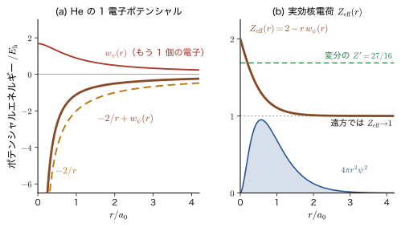
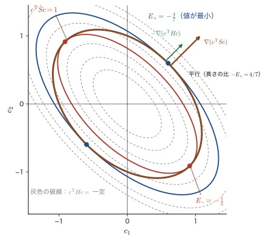
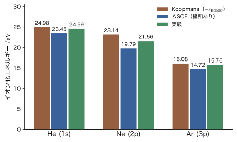

第36章Hartree–Fock 方程式 — 変分から Fock 演算子と Koopmans の定理へ
前の章（第35章）では，Slater（スレーター）行列式で表した多電子の波動関数について，エネルギーの期待値を計算し，電子どうしの相互作用が Coulomb 積分 $U_{ab}$ と交換積分 $J_{ab}$ で書けることを見た．ただし，そこでの軌道 $\chi_a$ は「与えられたもの」だった．ヘリウム原子なら，核電荷 2 の水素様の 1s 軌道をそのまま使って計算した．しかし本当に知りたいのは，エネルギーをいちばん低くする最良の軌道は何かである．この章では，変分原理（第30章，第31章）を使って，最良の軌道が満たす方程式——Hartree–Fock（ハートリー・フォック）方程式——を導く．
得られる方程式の形は，驚くほど素直である．電子 1 個ぶんの Schrödinger（シュレーディンガー）方程式 $\hat{F}\chi_a=\varepsilon_a\chi_a$ で，ただ 1 電子のハミルトニアン $\hat{h}$（運動エネルギーと核との引力）が，他のすべての電子がつくる平均の電場（Coulomb 項）と，Pauli の排他原理に由来する交換項を足した Fock（フォック）演算子 $\hat{F}$ に置き換わる．古典物理（AD 03）では，多数の荷電粒子の集団の中の 1 個の粒子は，他の粒子がつくる電位の中を動くものとして扱えた．Hartree–Fock 方程式はその量子力学版であり，2 つの違いがある．第 1 に，電場をつくる電荷分布は電子自身の軌道 $\lvert\chi_b\rvert^2$ で決まるので，方程式の解が方程式の係数を決める（自己無撞着）．第 2 に，同じ向きのスピンの電子には，古典物理に対応物のない交換項が加わる．
この方程式は，材料の電子状態を計算するほとんどの手法の出発点である．分子の軌道計算（Gaussian，ORCA，PySCF など）は Hartree–Fock 方程式を解くことから始まり，密度汎関数理論（AD 07）の Kohn–Sham 方程式は，この方程式の交換項を，交換と相関の効果をまとめた局所的なポテンシャルで置き換えた形をしている．また，得られる軌道エネルギー $\varepsilon_a$ は，Koopmans（クープマンス）の定理により「その軌道から電子を 1 個取り去るのに必要なエネルギーの符号を変えたもの」に近い値をもち，光電子分光のスペクトルを読むときの基本になる．この章では，導出を一行も飛ばさずに行い，He 原子と $\mathrm{H_2}$ 分子の数値で，何が正確で何が近似なのかを確かめる．
- Hartree 積に変分原理を適用して Hartree 方程式を導き，「電子 $a$ が他の電子の電荷雲がつくるポテンシャルを感じる」という平均場の意味と，自己相互作用の問題（水素 1s で $17.0\ \mathrm{eV}$）を説明できること
- Hartree–Fock 微積分方程式を，Coulomb 項と交換項（$\hat{U}_b$，$\hat{J}_b$）に分けて書き，Coulomb 項が局所，交換項が非局所（軌道が入れ替わる）であること，交換項は平行スピンの間だけで働くことを示せること
- 変分 $\delta$ の意味を微分係数のアナロジーで理解し，線形変分法を Lagrange の未定乗数法で解いて $Hc=ESc$（一般化固有値問題）を導けること．$c$ と $c^*$ を独立な変数として扱ってよい理由を説明できること
- スピン軌道 $\chi_a$ の変分から，Lagrange 乗数の行列 $\varepsilon_{ba}$ を含む方程式 $\hat{F}\chi_a=\sum_b\varepsilon_{ba}\chi_b$ を導き，占有軌道のユニタリ変換でこれを対角化してカノニカル Hartree–Fock 方程式 $\hat{F}\chi_a=\varepsilon_a\chi_a$ に直せること
- 軌道エネルギー $\varepsilon_a=h_{aa}+\sum_b(U_{ab}-J_{ab})$ と全エネルギー $E_0=\sum_a\varepsilon_a-\tfrac12\sum_{a,b}(U_{ab}-J_{ab})$（Hartree–Fock 近似の全エネルギーで，$E_{\mathrm{HF}}$ とも書く）の関係（二重計上）を説明できること
- Koopmans の定理 $\mathrm{IP}_a\approx-\varepsilon_a$ を導き，He（$24.98\ \mathrm{eV}$ と実験値 $24.59\ \mathrm{eV}$）と $\mathrm{H_2}$ の数値で，「軌道の緩和」と「電子相関」がほぼ打ち消し合う理由を説明できること
もとにしたノート：望月泰英『物理学ノート 量子力学3』 pp. 57–60．
36.1 Hartree 積から Hartree 方程式へ — 平均場と自己相互作用
36.1.1 出発点 — 多電子の問題を 1 電子の問題に戻したい
電子が $N$ 個あると，波動関数 $\Psi(\bm{x}_1,\dots,\bm{x}_N)$ は $3N$ 個の位置座標（とスピン変数）の関数になる（$\bm{x}_i=(\bm{r}_i,\sigma_i)$ は電子 $i$ の位置とスピンの組．第33章 33.4）．電子どうしの反発 $1/r_{ij}$ があるので，第33章で見たとおり，方程式を電子ごとに分けること（変数分離）はできない．銅 $1\ \mathrm{cm^3}$ の中の約 $2.5\times10^{24}$ 個の電子（伝導電子だけでも約 $8.5\times10^{22}$ 個）について，この関数そのものを扱うことは不可能である．私たちがほしいのは，水素原子の 1s，2p のように「電子 1 個ずつに軌道を割り当てる」描像を保ったまま，反発の影響を取り入れる方法である．
そのための考え方が平均場近似（mean-field approximation）である．電子 $a$ に注目し，他の電子が「いま，どこにいるか」は問わず，他の電子の存在確率の分布（電荷雲）がつくる静電ポテンシャルの中を，電子 $a$ が運動すると考える．古典物理でいえば，1 個の荷電粒子が，他の荷電粒子の集団がつくる電位（大学基礎物理学 第36章 36.8）の中を運動するのと同じ扱いである．ただし，電荷雲をつくる他の電子もまた同じ方法で決まる軌道の中にいるので，$N$ 個の 1 電子方程式は互いに結びついている（図36.1）．
この章では，原子単位（第33章 33.1）で式を書く．長さは $a_0$，エネルギーは $E_{\mathrm h}$ で測り，電子間反発は $1/r_{12}$（$r_{12}=\lvert\bm{r}_1-\bm{r}_2\rvert$）である．$N$ 電子系の電子のハミルトニアンは，原子核の位置を $\bm{R}_A$，核電荷を $Z_A$ として
\begin{equation} \hat{H}=\sum_{i=1}^{N}\hat{h}(i)+\sum_{i\lt j}\frac{1}{r_{ij}},\qquad \hat{h}(\bm{r})=-\frac12\nabla^2-\sum_A\frac{Z_A}{\lvert\bm{r}-\bm{R}_A\rvert} \label{eq:36-Ham} \end{equation}である．$\hat{h}$ は 1 個の電子の運動エネルギーと，すべての核との引力をまとめた 1 電子演算子で，第33章・第34章・第35章の $\hat{h}$ と同じものである．$\hat{h}(i)$ は，$\hat{h}$ の変数を電子 $i$ の座標にしたものである．また，スピン軌道 $\chi_a(\bm{x})=\psi_a(\bm{r})s_a(\sigma)$（$s_a=\alpha$ または $\beta$）は，$\bm{x}=(\bm{r},\sigma)$ について規格直交しているとする（$\braket{\chi_a}{\chi_b}=\delta_{ab}$）．$\bm{x}$ での積分 $\int\dd\bm{x}$ は，$\bm{r}$ の積分と $\sigma$ の和を意味する（第33章 33.4.1）．以下，占有されているスピン軌道の番号を $a,b,c,\dots=1,\dots,N$ と書き，1 電子積分と 2 電子積分を
\begin{equation} h_{aa}=\mel{\chi_a}{\hat{h}}{\chi_a},\qquad \mel{ab}{v}{cd}\equiv\iint\chi_a^*(\bm{x}_1)\chi_b^*(\bm{x}_2)\,\frac{1}{r_{12}}\,\chi_c(\bm{x}_1)\chi_d(\bm{x}_2)\,\dd\bm{x}_1\dd\bm{x}_2 \label{eq:36-int} \end{equation}と書く（$v\equiv1/r_{12}$ の略記．ブラ・ケットの 1 番目が電子 1，2 番目が電子 2）．第35章 35.3 節の Coulomb 積分と交換積分は，この記法で $U_{ab}=\mel{ab}{v}{ab}$，$J_{ab}=\mel{ab}{v}{ba}$ である．
36.1.2 Hartree 積のエネルギー期待値
Hartree（ハートリー，1928 年）は，電子ごとに軌道を割り当てた積の波動関数（第33章の Hartree 積．第33章では $\Psi$ と書いたが，ここでは Slater 行列式 $\Phi$ と区別するため $\Pi$ と書く）
\begin{equation} \Pi(\bm{x}_1,\dots,\bm{x}_N)=\chi_1(\bm{x}_1)\,\chi_2(\bm{x}_2)\cdots\chi_N(\bm{x}_N) \label{eq:36-hprod} \end{equation}を試行関数にして，変分法で最良の軌道を決めることを考えた．まず，$\Pi$ のエネルギー期待値を求める．$\hat{h}(i)$ は電子 $i$ の座標にだけ作用するので，$\braket{\Pi}{\Pi}=1$ を使うと，他の電子の因子は $\int\lvert\chi_j\rvert^2\dd\bm{x}_j=1$ になって消え，
$$ \mel{\Pi}{\hat{h}(i)}{\Pi}=\int\chi_i^*(\bm{x}_i)\,\hat{h}\,\chi_i(\bm{x}_i)\dd\bm{x}_i=h_{ii} $$が残る．2 電子項 $1/r_{ij}$ は電子 $i,j$ の座標にだけ関わるので，同様に
$$ \mel{\Pi}{\tfrac{1}{r_{ij}}}{\Pi}=\iint\lvert\chi_i(\bm{x}_i)\rvert^2\,\frac{1}{r_{ij}}\,\lvert\chi_j(\bm{x}_j)\rvert^2\dd\bm{x}_i\dd\bm{x}_j=\mel{ij}{v}{ij}=U_{ij} $$となる．したがって，Hartree 積のエネルギーは，1 電子項の和と，すべての電子の対 $(a,b)$ の Coulomb 積分の和である：
\begin{equation} E_{\mathrm H}=\sum_{a=1}^{N}h_{aa}+\sum_{a\lt b}U_{ab}=\sum_{a}h_{aa}+\frac12\sum_{a\ne b}U_{ab} \label{eq:36-EH} \end{equation}（最後の形は，対 $(a,b)$ を 2 回数えて $1/2$ をかけたもの．）電子の入れ替えを考えていないので，交換積分 $J_{ab}$ はまだ現れない．
36.1.3 変分と Hartree 方程式
各スピン軌道の規格化 $\braket{\chi_a}{\chi_a}=1$ を条件にして，$E_{\mathrm H}$ を最小にする $\chi_a$ を求める．Lagrange の未定乗数法（大学数学 第6章 6.7）により，条件ごとに未定乗数 $\varepsilon_a$ を導入した関数
$$ L_{\mathrm H}=E_{\mathrm H}-\sum_{a}\varepsilon_a\bigl(\braket{\chi_a}{\chi_a}-1\bigr) $$の第 1 変分を $0$ にする．$\chi_a\to\chi_a+\delta\chi_a$（$\chi_a^*\to\chi_a^*+\delta\chi_a^*$）と変えたときの各項の変化は，次のとおりである．変分の計算の意味と，$\delta\chi_a$ と $\delta\chi_a^*$ を独立に動かしてよい理由は，36.3 節で詳しく説明する．
- $h_{aa}=\mel{\chi_a}{\hat{h}}{\chi_a}$ の変化は $\mel{\delta\chi_a}{\hat{h}}{\chi_a}+\mel{\chi_a}{\hat{h}}{\delta\chi_a}$．
- $U_{ab}=\iint\lvert\chi_a(\bm{x}_1)\rvert^2\dfrac{1}{r_{12}}\lvert\chi_b(\bm{x}_2)\rvert^2$ の中の $\lvert\chi_a\rvert^2=\chi_a^*\chi_a$ が $\delta\chi_a^*\,\chi_a+\chi_a^*\,\delta\chi_a$ だけ変わるので，$U_{ab}$ の変化は $\displaystyle\int\dd\bm{x}_1\,\delta\chi_a^*(\bm{x}_1)\Bigl[\int\dfrac{\lvert\chi_b(\bm{x}_2)\rvert^2}{r_{12}}\dd\bm{x}_2\Bigr]\chi_a(\bm{x}_1)+(\text{複素共役})$．
- 式 \eqref{eq:36-EH} の中で $\chi_a$ を含むのは，$a$ を含む対 $(a,b)$（$b\ne a$）の Coulomb 積分 $U_{ab}=U_{ba}$ が $N-1$ 個である．各対は 1 回しか数えないので，$\chi_a$ の変分に対しては $\sum_{b\ne a}U_{ab}$ の変化だけを考えればよい．
- 規格化の項の変化は $\varepsilon_a\bigl(\braket{\delta\chi_a}{\chi_a}+\braket{\chi_a}{\delta\chi_a}\bigr)$．
ここで，電子 $b$ の電荷雲がつくる静電ポテンシャルを
\begin{equation} w_b(\bm{x}_1)\equiv\int\frac{\lvert\chi_b(\bm{x}_2)\rvert^2}{r_{12}}\dd\bm{x}_2=\int\frac{\lvert\psi_b(\bm{r}_2)\rvert^2}{\lvert\bm{r}_1-\bm{r}_2\rvert}\dd\bm{r}_2 \label{eq:36-wb} \end{equation}とおく（2 つ目の等号は，スピン関数の規格化 $\sum_\sigma\lvert s_b(\sigma)\rvert^2=1$ による．$w_b$ はスピンによらず，$\bm{r}_1$ だけの関数である）．これは，位置 $\bm{r}_2$ に電荷密度 $\lvert\psi_b\rvert^2$ で広がった負の電荷雲が，位置 $\bm{r}_1$ にある電子（電荷 $-1$）にもたらす反発の位置エネルギーである．$\chi_a(\bm{x}_1)$ に $w_b(\bm{x}_1)$ を掛ける演算を $\hat{U}_b$ と書く（次節で定義 36.1 として一般化する）：$\bigl(\hat{U}_b\chi_a\bigr)(\bm{x}_1)=w_b(\bm{x}_1)\,\chi_a(\bm{x}_1)$．すると変分は
$$ \delta L_{\mathrm H}=\sum_a\Bigl\{\bra{\delta\chi_a}\Bigl[\hat{h}+\sum_{b\ne a}\hat{U}_b-\varepsilon_a\Bigr]\ket{\chi_a}+(\text{複素共役})\Bigr\}=0 $$となる．$\delta\chi_a^*$ は任意なので，括弧の中が $\ket{\chi_a}$ に作用して $0$ にならなければならない．これが Hartree 方程式である．
公式36.1 Hartree 方程式
Hartree 積 \eqref{eq:36-hprod} のエネルギー \eqref{eq:36-EH} を最小にするスピン軌道は，次の方程式を満たす（原子単位）：
\begin{equation} \Bigl[\hat{h}+\sum_{b\ne a}\hat{U}_b\Bigr]\chi_a=\varepsilon_a\chi_a\qquad(a=1,\dots,N) \label{eq:36-hartree} \end{equation}すなわち，電子 $a$ は，核（$\hat{h}$ の第 2 項）と，自分以外の $N-1$ 個の電子の電荷雲がつくるポテンシャル $\sum_{b\ne a}w_b$ の中を動く 1 電子として扱われる．
この方程式は，「電子 $a$ が他の電子の電荷雲がつくる静電ポテンシャルを感じる」という平均場の描像そのものである．電荷雲 $\lvert\chi_b\rvert^2$ は他の軌道 $\chi_b$ で決まるので，$N$ 個の方程式は連立しており，一度に解けない．たとえば，はじめに近似の軌道を仮定して $w_b$ を作り，方程式を解いて新しい軌道を得，その軌道で $w_b$ を作り直す，という手順を繰り返して，入力と出力が一致するところ（自己無撞着，self-consistent）まで進める．この手順は，第37章で SCF（self-consistent field）法として詳しく扱う．Hartree は 1928 年に，この方法を数値積分で実際の原子に適用した．
36.1.4 自己相互作用 — なぜ $b\ne a$ なのか
式 \eqref{eq:36-hartree} の和は $b\ne a$ に制限されている．電子は自分自身の電荷雲とは反発しないからである．ところが，この制限は実用上やっかいである．全電子の電荷雲がつくる共通のポテンシャル $\sum_{b=1}^{N}w_b$（$b=a$ も含める）を使えば，すべての軌道が同じ演算子 $\hat{h}+\sum_bw_b$ の固有関数になり，扱いが格段に楽になる．しかし，そうすると電子 $a$ は自分自身の電荷雲を感じてしまう．これを自己相互作用（self-interaction）という．どれほどの大きさになるかを，電子が 1 個だけの水素原子で見よう．
例題36.1 水素原子の 1s 電子の自己相互作用
水素原子の 1s 軌道 $\psi(r)=e^{-r}/\sqrt{\pi}$（原子単位）にある電子は，1 個しかないので，電子間反発は存在しない．それにもかかわらず，自分自身の電荷雲のポテンシャル $w(r)$ を掛ける項を残してしまったとすると，どれだけのエネルギーが余計に現れるか．(1) $w(r)=\displaystyle\int\dfrac{\lvert\psi(\bm{r}')\rvert^2}{\lvert\bm{r}-\bm{r}'\rvert}\dd\bm{r}'$ を求めよ．(2) 自己相互作用のエネルギー $U_{11}=\mel{\psi}{w}{\psi}$ を求め，eV で表せ．
解答 (1) 電荷雲は球対称で，密度は $\rho(r)=\lvert\psi\rvert^2=e^{-2r}/\pi$ である．球対称な電荷分布がつくる電位は，半径 $r$ より内側の電荷 $Q(r)$ が中心に集まったもの $Q(r)/r$ と，外側の球殻がつくる一定の電位 $\displaystyle\int_r^\infty4\pi r'\rho(r')\dd r'$ の和になる（殻定理．第18章 18.3 の遮蔽と同じ考え方）．内側の電荷は，$\displaystyle Q(r)=\int_0^r4\pi r'^2\rho\,\dd r'=4\int_0^rr'^2e^{-2r'}\dd r'=1-e^{-2r}\bigl(1+2r+2r^2\bigr)$（部分積分を 2 回行った）．外側の寄与は，$\displaystyle4\int_r^\infty r'e^{-2r'}\dd r'=e^{-2r}(2r+1)$．したがって
$$ w(r)=\frac{1-e^{-2r}(1+2r+2r^2)}{r}+e^{-2r}(2r+1)=\frac1r-e^{-2r}\Bigl(\frac1r+1\Bigr). $$$r\to\infty$ で $w\to1/r$（電荷 1 の点電荷の電位），$r\to0$ では $e^{-2r}=1-2r+\cdots$ を展開して $w(0)=1$ と有限になる．
(2) 球対称なので，
$$ U_{11}=\int_0^\infty4\pi r^2\rho(r)\,w(r)\,\dd r=4\int_0^\infty r^2e^{-2r}\Bigl[\frac1r-e^{-2r}\Bigl(\frac1r+1\Bigr)\Bigr]\dd r =4\Bigl[\int_0^\infty re^{-2r}\dd r-\int_0^\infty r^2e^{-4r}\dd r-\int_0^\infty re^{-4r}\dd r\Bigr]. $$$\displaystyle\int_0^\infty r^ne^{-\lambda r}\dd r=n!/\lambda^{n+1}$ により，3 つの積分は $\dfrac14$，$\dfrac{2}{4^3}=\dfrac1{32}$，$\dfrac1{4^2}=\dfrac1{16}$ である．よって $U_{11}=4\Bigl(\dfrac14-\dfrac1{32}-\dfrac1{16}\Bigr)=4\cdot\dfrac{5}{32}=\dfrac58\ E_{\mathrm h}$．$1\ E_{\mathrm h}=27.211\ \mathrm{eV}$ なので，
$$ U_{11}=0.625\ E_{\mathrm h}=0.625\times27.211\ \mathrm{eV}=17.0\ \mathrm{eV}. $$これは水素原子のイオン化エネルギー $13.6\ \mathrm{eV}$ よりも大きい．つまり，自己相互作用を残すと，電子が 1 個しかない水素原子の 1s 軌道のエネルギーが $\langle\hat{h}\rangle=-\tfrac12=-13.6\ \mathrm{eV}$ から $-13.6+17.0=+3.4\ \mathrm{eV}$ に上がって，束縛されなくなってしまう（ここでは 1s 軌道をそのまま使ったときの見積もりである）．一般に，$\psi$ が規格化された 1s 型の軌道なら，$U_{11}$ は核電荷 $Z$ で $5Z/8$ と書ける（第29章 29.2）．
Hartree の方法が $b\ne a$ を課すのはこのためである．しかしそうすると，軌道 $\chi_a$ ごとに異なる演算子 $\hat{h}+\sum_{b\ne a}\hat{U}_b$ を使うことになる．もう 1 つ，異なる演算子の固有関数は互いに直交する保証がなく，Hartree 積の変分では規格化の条件しか課していないので，得られた軌道が直交しない可能性が残る．これらの問題を解いてくれるのが，次節で導く Hartree–Fock 方程式である．Fock（フォック）と Slater（スレーター）は 1930 年に，Hartree 積の代わりに，Pauli の排他原理を満たす Slater 行列式を試行関数にして同じ変分を行った．その結果，Coulomb 項に交換項が加わり，しかも自己相互作用が交換項と厳密に打ち消し合うので，和を $b=a$ を含めて全体に広げられて，全軌道が共通の演算子の固有関数になる（36.2.4 節）．
3 つの段階：Hartree，Hartree–Fock，電子相関
電子間相互作用の取り込み方は，精度の順に次の 3 段階に整理できる．(i) Hartree 近似：Hartree 積を使い，電子 $a$ は他の電子の電荷雲 $\sum_{b\ne a}\hat{U}_b$ だけを感じる．Pauli の排他原理は「1 つの軌道に電子を入れる数」以外には使われていない．(ii) Hartree–Fock 近似：Slater 行列式を使う．電荷雲の項 $\hat{U}_b$ に，同じスピンの電子が近づけないことによる交換項 $-\hat{J}_b$ が加わり，自己相互作用も消える．(iii) 電子相関：Hartree–Fock 近似でも，各電子は他の電子の「平均の電荷雲」しか見ていない．電子どうしが瞬間ごとに互いを避け合う効果（Coulomb 反発による相関）は入っておらず，厳密なエネルギーとの差 $E_{\mathrm{corr}}=E_{\mathrm{exact}}-E_{\mathrm{HF}}$ が相関エネルギーである（第35章 35.7 節）．He 原子では，この差はわずか $-1.14\ \mathrm{eV}$（全エネルギー $-79\ \mathrm{eV}$ の約 1.4 %）だが，化学結合や磁性を議論するには無視できない大きさである．
36.2 Hartree–Fock 微積分方程式 — Coulomb 項と交換項
36.2.1 交換項をポテンシャルとして入れる
電子が 2 個以上ある系では，電子どうしの Coulomb 反発（電荷雲の間の反発）だけでなく，同じ向きのスピンをもつ電子どうしの間に働く交換項も現れる．このことは，波動関数を Slater 行列式で近似してエネルギーを計算すると，Coulomb 積分 $U_{ab}$ のほかに，スピンが平行なときだけ残る交換積分 $J_{ab}$ が現れることからわかった（第35章）．交換項はエネルギーを下げる向きに働くので，同じスピンの電子どうしの間に引力が働くように見える．しかし実際には引力ではなく，「同じスピンの電子は近づけない（Fermi 孔）」ことの結果として，電子間の Coulomb 反発が弱められているのである（第33章 33.6）．
そこで，この 2 つの効果（Coulomb 項と交換項）を 1 電子の Schrödinger 方程式の中にポテンシャルとして入れ込むことを考える．次に示すのは，その結果得られる方程式である．厳密な導出は 36.4 節で行うので，ここでは先に方程式の形と意味をつかんでおく．
36.2.2 Hartree–Fock 微積分方程式
原子単位で，核 $A$ の位置を $\bm{R}_A$，核電荷を $Z_A$ とする．電子 1 の座標 $\bm{x}_1=(\bm{r}_1,\sigma_1)$ を使って，占有されているスピン軌道 $\chi_a$ が満たす方程式は
\begin{align} &\Bigl[-\frac12\nabla_{\bm{r}_1}^2-\sum_A\frac{Z_A}{\lvert\bm{r}_1-\bm{R}_A\rvert}\Bigr]\chi_a(\bm{r}_1,\sigma_1)\notag\\ &\quad+\sum_{b\ne a}\underbrace{\Bigl[\int\dd\bm{r}_2\dd\sigma_2\,\chi_b^*(\bm{r}_2,\sigma_2)\,\frac{1}{r_{12}}\,\chi_b(\bm{r}_2,\sigma_2)\Bigr]}_{\text{Coulomb 項（Hartree 項）}}\chi_a(\bm{r}_1,\sigma_1)\notag\\ &\quad-\sum_{b\ne a}\underbrace{\Bigl[\int\dd\bm{r}_2\dd\sigma_2\,\chi_b^*(\bm{r}_2,\sigma_2)\,\frac{1}{r_{12}}\,\chi_a(\bm{r}_2,\sigma_2)\Bigr]}_{\text{交換項}}\chi_b(\bm{r}_1,\sigma_1) =\varepsilon_a\,\chi_a(\bm{r}_1,\sigma_1) \label{eq:36-HFmicro} \end{align}である．第 1 行は，運動エネルギーと核との引力（1 電子の項）で，Hartree 方程式（式 \eqref{eq:36-hartree}）と同じである．第 2 行が Coulomb 項で，他の電子 $b$ の電荷雲 $\lvert\chi_b\rvert^2$ がつくるポテンシャル $w_b(\bm{x}_1)$ を $\chi_a$ に掛けたものである．第 3 行が交換項で，括弧の外側の関数が $\chi_a$ ではなく $\chi_b(\bm{r}_1,\sigma_1)$ になっていることに注意してほしい．その理由は 36.2.5 節と 36.4.3 節で説明する．
注意：これは普通の Schrödinger 方程式ではない
式 \eqref{eq:36-HFmicro} は，一見すると 1 電子の Schrödinger 方程式に似ているが，通常の Schrödinger 方程式とは 3 点で異なる．(1) 方程式のポテンシャル（Coulomb 項と交換項）が，解そのもの $\chi_b$ で決まる．解 $\chi_a$ を求めるには，$\chi_b$ を知っておかなければならない．つまり方程式は連立しており，$\chi$ について非線形である．(2) 交換項は，$\chi_a$ に位置の関数を掛ける演算ではなく，$\chi_a$ と $\chi_b$ の積を $1/r_{12}$ を重みにして積分して得た関数 $K(\bm{x}_1)$ を，$\chi_b(\bm{x}_1)$ に掛けた形をしている（36.2.3 節）．方程式に微分（$\nabla^2$）と積分（$\int\dd\bm{r}_2$）の両方が現れるので，微積分方程式（integro-differential equation）とよばれる．(3) 交換項は，スピンが平行な軌道 $\chi_b$ とのあいだにだけ現れる（36.2.6 節）．なお，古い講義や文献では，Coulomb 項を「相関項」と呼ぶことがあるが，現在の「電子相関」は Hartree–Fock 近似が取りこぼす効果を指すので（第35章 35.2 節の囲み），本書では Coulomb 項（Hartree 項）と呼ぶ．
36.2.3 Coulomb 演算子 $\hat{U}_b$ と交換演算子 $\hat{J}_b$
式 \eqref{eq:36-HFmicro} の意味は単純である．1 電子の項（運動エネルギーと電子–核間のポテンシャル）と，2 電子の項（電子間の Coulomb 反発のエネルギーと，交換エネルギー）を，ハミルトニアンの中に入れただけである．1 電子の項をまとめて $\hat{h}(\bm{r}_1)$ と書く（式 \eqref{eq:36-Ham}）．Coulomb 項と交換項も，次のように演算子として定義する．
定義36.1 Coulomb 演算子 $\hat{U}_b$ と交換演算子 $\hat{J}_b$
占有スピン軌道 $\chi_b$ と，任意のスピン軌道の関数 $\chi(\bm{x})$ に対して，
\begin{align} \bigl(\hat{U}_b\chi\bigr)(\bm{x}_1)&\equiv\Bigl[\int\chi_b^*(\bm{x}_2)\frac{1}{r_{12}}\chi_b(\bm{x}_2)\dd\bm{x}_2\Bigr]\chi(\bm{x}_1)=w_b(\bm{x}_1)\,\chi(\bm{x}_1), \label{eq:36-Udef}\\ \bigl(\hat{J}_b\chi\bigr)(\bm{x}_1)&\equiv\Bigl[\int\chi_b^*(\bm{x}_2)\frac{1}{r_{12}}\chi(\bm{x}_2)\dd\bm{x}_2\Bigr]\chi_b(\bm{x}_1) \label{eq:36-Jdef} \end{align}で決まる演算子 $\hat{U}_b$ をCoulomb 演算子（Coulomb operator），$\hat{J}_b$ を交換演算子（exchange operator）という．$\hat{U}_b\chi$ は，$\chi$ に関数 $w_b$ を掛けたもの．$\hat{J}_b\chi$ は，まず式 \eqref{eq:36-Jdef} の括弧の中の関数 $K_b[\chi](\bm{x}_1)\equiv\displaystyle\int\chi_b^*(\bm{x}_2)\dfrac{1}{r_{12}}\chi(\bm{x}_2)\dd\bm{x}_2$ を作り，それを $\chi_b(\bm{x}_1)$ に掛けたもの：$\bigl(\hat{J}_b\chi\bigr)(\bm{x}_1)=K_b[\chi](\bm{x}_1)\,\chi_b(\bm{x}_1)$ である．$K_b[\chi]$ は，$r_{12}=\lvert\bm{r}_1-\bm{r}_2\rvert$ に $\bm{r}_1$ が入っているので定数ではなく $\bm{x}_1$ の関数で，$\chi$ の全空間の値に依存する（$\chi_b^*\chi$ を電荷密度のように見たときの，静電ポテンシャルにあたる）．
他の教科書との記号の対応：$U,J$ と $J,K$
Szabo–Ostlund など多くの教科書や，AD 07 では，Coulomb 演算子を $\hat{J}_b$，交換演算子を $\hat{K}_b$，2 つの積分を $J_{ab}$（Coulomb 積分），$K_{ab}$（交換積分）と書く．本書は Coulomb を $U$，交換を $J$ と書くので，本書の $\hat{U}_b,U_{ab}$ が彼らの $\hat{J}_b,J_{ab}$，本書の $\hat{J}_b,J_{ab}$ が彼らの $\hat{K}_b,K_{ab}$ にあたる．他書と併読するときは，$J$ の意味が入れ替わることに注意してほしい．また，この $J$ は全角運動量の $J$ でも，Hückel 法の Coulomb 積分 $\alpha$ でもない．
この 2 つの演算子は，2 つの座標 $\bm{x}_1,\bm{x}_2$ の関数（積分核）を使って，$\bigl(\hat{U}_b\chi\bigr)(\bm{x}_1)=\chi(\bm{x}_1)\displaystyle\int U_b(\bm{x}_1,\bm{x}_2)\dd\bm{x}_2$，$\bigl(\hat{J}_b\chi\bigr)(\bm{x}_1)=\displaystyle\int J_b(\bm{x}_1,\bm{x}_2)\,\chi(\bm{x}_2)\dd\bm{x}_2$ とも書ける．核は
\begin{equation} U_b(\bm{x}_1,\bm{x}_2)=\frac{\lvert\chi_b(\bm{x}_2)\rvert^2}{r_{12}},\qquad J_b(\bm{x}_1,\bm{x}_2)=\frac{\chi_b(\bm{x}_1)\,\chi_b^*(\bm{x}_2)}{r_{12}} \label{eq:36-kernel} \end{equation}で，どちらも電子 1 の座標 $(\bm{r}_1,\sigma_1)$ と電子 2 の座標 $(\bm{r}_2,\sigma_2)$ の両方に依存する．$U_b(\bm{r}_1,\bm{r}_2,\sigma_1,\sigma_2)$ のように，座標をすべて書く流儀があるのはこのためである．ただし電子 2 の座標は積分されて消えるので，結果は電子 1 の座標だけの関数になる．
この記号を使うと，式 \eqref{eq:36-HFmicro} は次のようにコンパクトに書ける．
公式36.2 Hartree–Fock 方程式（微積分方程式の形）
\begin{equation} \Bigl[\hat{h}+\sum_{b\ne a}\hat{U}_b-\sum_{b\ne a}\hat{J}_b\Bigr]\chi_a=\varepsilon_a\,\chi_a\qquad(a=1,\dots,N) \label{eq:36-HFUJ} \end{equation}$\hat{U}_b$ と $\hat{J}_b$ の期待値は，第35章の 2 つの積分になる：$\mel{\chi_a}{\hat{U}_b}{\chi_a}=U_{ab}$，$\mel{\chi_a}{\hat{J}_b}{\chi_a}=J_{ab}$．実際，$\mel{\chi_a}{\hat{U}_b}{\chi_a}=\displaystyle\iint\lvert\chi_a(\bm{x}_1)\rvert^2\dfrac{1}{r_{12}}\lvert\chi_b(\bm{x}_2)\rvert^2=U_{ab}$，$\mel{\chi_a}{\hat{J}_b}{\chi_a}=\displaystyle\iint\chi_a^*(\bm{x}_1)\chi_b^*(\bm{x}_2)\dfrac{1}{r_{12}}\chi_b(\bm{x}_1)\chi_a(\bm{x}_2)=\mel{ab}{v}{ba}=J_{ab}$ である．また，どちらの演算子もエルミート（$\hat{U}_b$ は実数の関数を掛けるだけ，$\hat{J}_b$ は核が $J_b(\bm{x}_2,\bm{x}_1)=J_b(\bm{x}_1,\bm{x}_2)^*$ を満たす）である．
36.2.4 $b=a$ を含めてよい — 自己相互作用の打ち消し
式 \eqref{eq:36-HFUJ} の和は $b\ne a$ に制限されているが，実は制限を外して $b=a$ も含めてよい．$b=a$ の項を実際に計算してみよう．式 \eqref{eq:36-Udef}，\eqref{eq:36-Jdef} で $\chi_b=\chi_a$，$\chi=\chi_a$ とおくと，
\begin{equation} \bigl(\hat{U}_a\chi_a\bigr)(\bm{x}_1)=\Bigl[\int\chi_a^*(\bm{x}_2)\frac{1}{r_{12}}\chi_a(\bm{x}_2)\dd\bm{x}_2\Bigr]\chi_a(\bm{x}_1)=\bigl(\hat{J}_a\chi_a\bigr)(\bm{x}_1) \label{eq:36-selfcancel} \end{equation}となって，2 つは全く同じ式である．つまり $b=a$ では $\hat{U}_a\chi_a-\hat{J}_a\chi_a=0$ で，$U-J$ は $0$ になる．したがって，$b=a$ の項を足しても方程式は変わらない．例題36.1 で見た自己相互作用 $\hat{U}_a$ を，交換項 $-\hat{J}_a$ が厳密に打ち消していることになる（水素原子のように電子が 1 個のとき，Hartree–Fock 方程式が厳密な Schrödinger 方程式に一致するのは，このためである）．こうして，全部の占有軌道について同じ演算子を使えるようになる：
\begin{equation} \Bigl[\hat{h}+\sum_{b=1}^{N}\bigl(\hat{U}_b-\hat{J}_b\bigr)\Bigr]\chi_a=\varepsilon_a\chi_a\qquad(a=1,\dots,N) \label{eq:36-HFall} \end{equation}左辺の括弧の中の演算子を Fock 演算子 $\hat{F}\equiv\hat{h}+\sum_{b=1}^{N}\bigl(\hat{U}_b-\hat{J}_b\bigr)$ と書く（36.5.1 節で正式に定義し，性質を調べる）．すると式 \eqref{eq:36-HFall} は $\hat{F}\chi_a=\varepsilon_a\chi_a$ という，固有値方程式の形になる．
ただし，$b=a$ の相殺が成り立つのは占有されているスピン軌道に作用するときだけである．占有されていない軌道 $\chi$ に $\sum_b(\hat{U}_b-\hat{J}_b)$ を作用させても，同じことは起きない（36.5 節）．
36.2.5 Coulomb 項は局所，交換項は非局所
$\hat{U}_b$ と $\hat{J}_b$ は，見た目は似ているが，作用のしかたは大きく違う（図36.2）．$\hat{U}_b$ は，$\chi(\bm{x}_1)$ にその点での関数 $w_b(\bm{x}_1)$ の値を掛けるだけである．結果の $\bm{x}_1$ での値は，$\chi$ の $\bm{x}_1$ での値だけで決まる．このような演算子を局所（local）といい，ポテンシャル $w_b$ として書ける．古典物理の静電ポテンシャルと同じ性格である．
これに対して $\hat{J}_b$ は，まず $\chi$ と $\chi_b$ の積を $1/r_{12}$ を重みにして電子 2 の座標について全空間で積分し，$\bm{x}_1$ の関数 $K_b[\chi](\bm{x}_1)=\displaystyle\int\chi_b^*(\bm{x}_2)\dfrac{1}{r_{12}}\chi(\bm{x}_2)\dd\bm{x}_2$ を作る（$r_{12}$ に $\bm{r}_1$ が入っているので，$K_b$ は定数ではなく $\bm{x}_1$ の関数である）．そのうえで，この関数を $\chi_b(\bm{x}_1)$ に掛ける：$\bigl(\hat{J}_b\chi\bigr)(\bm{x}_1)=K_b[\chi](\bm{x}_1)\,\chi_b(\bm{x}_1)$．出力の関数は，$\chi$ の形ではなく $\chi_b$ の形に，なめらかな関数 $K_b$ を掛けたものになる．式 \eqref{eq:36-HFmicro} の交換項で，括弧の外側が $\chi_b(\bm{r}_1,\sigma_1)$ になるのはこのためである．これは，第35章の交換積分 $J_{ab}=\mel{ab}{v}{ba}$ で，電子 1 と 2 が軌道 $a,b$ を入れ替えていたことの反映である．実際，エネルギー $E_0=\sum_ah_{aa}+\tfrac12\sum_{a,b}(U_{ab}-J_{ab})$（第35章．36.4.1 節で再掲する）の $\chi_a^*$ に関する変分をとると，$J_{ab}=\mel{ab}{v}{ba}=\displaystyle\iint\chi_a^*(\bm{x}_1)\chi_b^*(\bm{x}_2)\dfrac{1}{r_{12}}\chi_b(\bm{x}_1)\chi_a(\bm{x}_2)$ から，$\chi_a^*(\bm{x}_1)$ の係数として，$\chi_b(\bm{x}_1)$ に，$\displaystyle\int\chi_b^*(\bm{x}_2)\dfrac{1}{r_{12}}\chi_a(\bm{x}_2)\dd\bm{x}_2$ を掛けたものが現れる（36.4 節）．この演算子は，$\chi$ の全空間の値に依存するので非局所（nonlocal）である．非局所演算子は，$\hat{J}_b\chi=(\text{位置の関数})\times\chi$ の形には書けない．そのため，交換項を 1 つの「ポテンシャル」で置き換えることは，一般にはできない．
例題36.2 ヘリウム原子の 1s$^2$ 閉殻 — Hartree–Fock 方程式は 1 本の式になる
ヘリウム原子の基底状態では，2 個の電子が同じ空間軌道 $\psi(\bm{r})$（1s 型）に入り，スピンだけが違う：$\chi_1=\psi\alpha$，$\bar{\chi}_1=\psi\beta$．式 \eqref{eq:36-HFall} を書き下し，$\psi$ の方程式を求めよ．
解答 $a=\chi_1=\psi\alpha$ について，和は $b=\chi_1$ と $b=\bar{\chi}_1$ の 2 項である．
$b=\chi_1$：$b=a$ なので，式 \eqref{eq:36-selfcancel} により $\hat{U}_{\chi_1}\chi_1-\hat{J}_{\chi_1}\chi_1=0$．
$b=\bar{\chi}_1$：Coulomb 演算子は，電荷雲 $\lvert\bar{\chi}_1\rvert^2=\lvert\psi\rvert^2\lvert\beta\rvert^2$ のポテンシャル $w_\psi(\bm{r})=\displaystyle\int\dfrac{\lvert\psi(\bm{r}')\rvert^2}{\lvert\bm{r}-\bm{r}'\rvert}\dd\bm{r}'$（スピンの和 $\sum_\sigma\lvert\beta(\sigma)\rvert^2=1$ による）を掛ける．したがって $\hat{U}_{\bar{\chi}_1}\chi_1=w_\psi(\bm{r}_1)\psi(\bm{r}_1)\alpha(\sigma_1)$．交換演算子は，括弧の中にスピン関数の内積が含まれる：
$$ \bigl(\hat{J}_{\bar{\chi}_1}\chi_1\bigr)(\bm{x}_1)=\Bigl[\int\psi^*(\bm{r}_2)\frac{1}{r_{12}}\psi(\bm{r}_2)\dd\bm{r}_2\ \sum_{\sigma_2}\beta^*(\sigma_2)\alpha(\sigma_2)\Bigr]\psi(\bm{r}_1)\beta(\sigma_1)=0 $$（スピン関数の直交性 $\sum_\sigma\beta^*(\sigma)\alpha(\sigma)=0$）．スピンが反平行なので，交換項は $0$ になる．
以上から，$\hat{F}\chi_1=\bigl[\hat{h}+w_\psi(\bm{r}_1)\bigr]\psi(\bm{r}_1)\alpha(\sigma_1)=\varepsilon\,\psi(\bm{r}_1)\alpha(\sigma_1)$．スピン関数は演算子を通り抜けるので，空間軌道について
\begin{equation} \Bigl[-\frac12\nabla^2-\frac{2}{r}+w_\psi(\bm{r})\Bigr]\psi(\bm{r})=\varepsilon\,\psi(\bm{r}) \label{eq:36-He-eq} \end{equation}を得る．$\bar{\chi}_1$ についても同じ方程式になる．すなわち，He 原子の HF 方程式は，「核（電荷 $2$．$\hat{h}=-\tfrac12\nabla^2-2/r$ の第 2 項）の引力と，もう 1 個の電子の電荷雲（$\lvert\psi\rvert^2$）の反発」を感じる 1 電子の方程式 1 本になる．この場合は Hartree 方程式（式 \eqref{eq:36-hartree}）とも一致する．この方程式を，$w_\psi$ を作り直しながら繰り返し解くと（第37章），$\varepsilon=-0.9180\ E_{\mathrm h}$，全エネルギー $E=-2.8617\ E_{\mathrm h}=-77.87\ \mathrm{eV}$ を得る（36.5 節）．第31章で $Z'=27/16$ の 1s 軌道を変分で選んだときのエネルギー $-77.49\ \mathrm{eV}$ より $0.38\ \mathrm{eV}$ 低い．指数関数型の 1s 軌道は，軌道の関数形を 1 個のパラメータ $Z'$ に制限した族の 1 つにすぎない．空間軌道 $\psi$ を任意の関数にとった積 $\psi(\bm{r}_1)\psi(\bm{r}_2)$（と反対称のスピン関数）の中での最低の値が Hartree–Fock 極限で，$-77.87\ \mathrm{eV}$ はそれに等しい．この値を Gauss 関数の基底で実際に求める手順は，演習36.7 と第37章で示す．電子 1 個が感じるポテンシャルと実効核電荷を，図36.3 に示す．

関連シミュレーター：変分原理 — 有効核電荷を振って He の全エネルギーを探す
例題36.3 ヘリウム原子の励起配置 1s2s（$^3$S）— 交換演算子の非局所性
ヘリウム原子の励起状態 $^3\mathrm{S}$（1s2s，スピンが平行）を，2 個のスピン軌道 $\chi_a=\psi_{1\mathrm{s}}\alpha$，$\chi_b=\psi_{2\mathrm{s}}\alpha$ の Slater 行列式で表す．(1) Fock 演算子 $\hat{F}$ を $\chi_a$，$\chi_b$ に作用させたときの形を書け．(2) 水素様の軌道（核電荷 $Z=2$）を使って，$\hat{J}_a\chi_b$ が，$\chi_b$ の節（$\psi_{2\mathrm{s}}=0$ となる点 $r=1\ a_0$）でも $0$ にならないことを示し，交換項を 1 つの局所ポテンシャルで置き換えられないことを説明せよ．
解答 (1) 占有軌道は 2 個で，スピンが平行なので，交換演算子も 2 個とも働く．式 \eqref{eq:36-HFall} の和の中の $b=a$ の項は，自己相互作用として打ち消し合う（式 \eqref{eq:36-selfcancel}）ので，
$$ \hat{F}\chi_a=\bigl[\hat{h}+\hat{U}_b-\hat{J}_b\bigr]\chi_a,\qquad \hat{F}\chi_b=\bigl[\hat{h}+\hat{U}_a-\hat{J}_a\bigr]\chi_b $$となる．$\hat{J}_b\chi_a$ は，式 \eqref{eq:36-Jdef} により，$\psi_{2\mathrm{s}}(\bm{r}_1)\alpha(\sigma_1)$ に $\bm{r}_1$ の関数 $\displaystyle\int\psi_{2\mathrm{s}}^*(\bm{r}_2)\dfrac{1}{r_{12}}\psi_{1\mathrm{s}}(\bm{r}_2)\dd\bm{r}_2$ を掛けた形，$\hat{J}_a\chi_b$ は $\psi_{1\mathrm{s}}(\bm{r}_1)\alpha(\sigma_1)$ に $\bm{r}_1$ の関数 $\displaystyle\int\psi_{1\mathrm{s}}^*(\bm{r}_2)\dfrac{1}{r_{12}}\psi_{2\mathrm{s}}(\bm{r}_2)\dd\bm{r}_2$ を掛けた形である．
(2) $\hat{J}_a\chi_b$ の空間部分は，$K(\bm{r}_1)\,\psi_{1\mathrm{s}}(\bm{r}_1)$，ただし $K(\bm{r}_1)=\displaystyle\int\psi_{1\mathrm{s}}^*(\bm{r}_2)\dfrac{1}{r_{12}}\psi_{2\mathrm{s}}(\bm{r}_2)\dd\bm{r}_2$．球対称な軌道で，動径関数 $R_{1\mathrm{s}}=4\sqrt2\,e^{-2r}$，$R_{2\mathrm{s}}=2(1-r)e^{-r}$（$Z=2$，規格化積分はどちらも 1）を使うと，$\psi=R/\sqrt{4\pi}$ で，球対称な分布のつくる電位（殻定理）から
$$ K(r)=\frac1r\int_0^rR_{1\mathrm{s}}R_{2\mathrm{s}}\,r'^2\dd r'+\int_r^\infty R_{1\mathrm{s}}R_{2\mathrm{s}}\,r'\dd r' . $$$R_{1\mathrm{s}}R_{2\mathrm{s}}=8\sqrt2\,(1-r)e^{-3r}$ を入れて $r=1$ で計算する．第 1 項の被積分関数 $(1-r')r'^2e^{-3r'}$ は $\dfrac{\dd}{\dd r'}\Bigl[\dfrac{r'^3e^{-3r'}}{3}\Bigr]$ に等しいので，
$$ \frac11\int_0^1R_{1\mathrm{s}}R_{2\mathrm{s}}\,r'^2\dd r'=8\sqrt2\Bigl[\frac{r'^3e^{-3r'}}{3}\Bigr]_0^1=\frac{8\sqrt2}{3}e^{-3}. $$第 2 項は，部分積分により $\displaystyle\int_1^\infty r'e^{-3r'}\dd r'=\frac{e^{-3}}{3}+\frac13\int_1^\infty e^{-3r'}\dd r'=\frac{e^{-3}}{3}+\frac{e^{-3}}{9}=\frac49e^{-3}$，$\displaystyle\int_1^\infty r'^2e^{-3r'}\dd r'=\frac{e^{-3}}{3}+\frac23\int_1^\infty r'e^{-3r'}\dd r'=\frac{e^{-3}}{3}+\frac{8e^{-3}}{27}=\frac{17}{27}e^{-3}$ なので，
$$ \int_1^\infty R_{1\mathrm{s}}R_{2\mathrm{s}}\,r'\dd r'=8\sqrt2\Bigl(\frac49-\frac{17}{27}\Bigr)e^{-3}=-\frac{40\sqrt2}{27}e^{-3}. $$この 2 項を足すと，
$$ K(1)=\Bigl(\frac{8}{3}-\frac{40}{27}\Bigr)\sqrt2\,e^{-3}=\frac{32\sqrt2}{27}e^{-3}=0.0834\ \ne0 . $$したがって，$\bigl(\hat{J}_a\chi_b\bigr)$ の $r=1\ a_0$ での値は $K(1)\psi_{1\mathrm{s}}(1)\ne0$ である（$\psi_{1\mathrm{s}}(1)=4\sqrt2e^{-2}/\sqrt{4\pi}=0.216$）．ところが $\chi_b$ 自身は，$\psi_{2\mathrm{s}}(1)=0$ である．もし $\hat{J}_a\chi_b=V(\bm{r})\chi_b$ となる有限な局所ポテンシャル $V$ があれば，$r=1$ で右辺は $0$ になるはずで，矛盾する．したがって，交換項は，$V(\bm{r})\chi_b$ の形には書けない．「交換ポテンシャル」を無理に $V_{\mathrm x}=(\hat{J}_a\chi_b)/\chi_b$ と定義すると，$\chi_b$ の節で無限大になり，しかも作用する軌道ごとに違う関数になる．
応用：交換項の局所近似 — Xα 法と密度汎関数理論
非局所な交換項は，計算量の点でも重い（Gauss 基底でも，2 電子積分の数が基底関数の数の 4 乗に比例して増える）．そこで Slater（1951 年）は，交換項を電子密度 $\rho$ だけで決まる局所ポテンシャル（$\rho^{1/3}$ に比例する形）で置き換える Xα 法を提案した．この考え方は，Kohn–Sham 方程式（AD 07 第10章）の局所密度近似（LDA）に受け継がれ，固体の電子状態計算の標準になった．いっぽう，局所近似では自己相互作用の打ち消しが不完全になる（自己相互作用誤差）．遷移金属酸化物などのバンドギャップが小さく見積もられる原因の 1 つで，Hartree–Fock の交換項を一部混ぜる混成汎関数（B3LYP，HSE06 など）は，この欠点を補うために使われる．
36.2.6 スピンと交換項 — 「平行スピンの間だけ」
36.2.1 節で，交換項は同じ向きのスピンをもつ電子どうしに現れると述べた．式 \eqref{eq:36-Jdef} から，これを確かめよう．スピン軌道を $\chi_a=\psi_as_a(\sigma)$，$\chi_b=\psi_bs_b(\sigma)$ と書く．交換演算子の括弧の中のスピンの和は $\sum_{\sigma_2}s_b^*(\sigma_2)s_a(\sigma_2)=\delta_{s_bs_a}$ で（$s=\alpha$ か $\beta$），空間部分は $1/r_{12}$ を含むのでスピンとは独立に積分できる．したがって
\begin{equation} \bigl(\hat{J}_b\chi_a\bigr)(\bm{x}_1)=\delta_{s_as_b}\Bigl[\int\psi_b^*(\bm{r}_2)\frac{1}{r_{12}}\psi_a(\bm{r}_2)\dd\bm{r}_2\Bigr]\psi_b(\bm{r}_1)\,s_b(\sigma_1) \label{eq:36-Jspin} \end{equation}である．$\delta_{s_as_b}$ は，スピンが平行（$s_a=s_b$）のときだけ $1$，反平行なら $0$ である．一方，Coulomb 演算子にはスピンの制限がなく，すべての占有軌道 $b$ の電荷雲が，スピンにかかわらず $\chi_a$ に作用する（$w_b$ はスピンによらない）．例題36.2 では，$a=\chi_1$（$\alpha$）に対して $b=\bar{\chi}_1$（$\beta$）の交換項が消えた．正確には，「異なるスピンの間には引力が働く」のではなく，「同じスピンの間で，電荷雲の反発が交換項の分だけ弱められる」のである．
例題36.4 Li 原子（1s$^2$2s）で，Hartree 方程式と HF 方程式に現れる項の数
Li 原子の基底配置 $1\mathrm{s}^22\mathrm{s}$ は，$\chi_1=\psi_{1\mathrm{s}}\alpha$，$\chi_2=\psi_{1\mathrm{s}}\beta$，$\chi_3=\psi_{2\mathrm{s}}\alpha$ で表す．3 個のスピン軌道のそれぞれについて，Hartree 方程式（式 \eqref{eq:36-hartree}）と Hartree–Fock 方程式（式 \eqref{eq:36-HFUJ}）に現れる $\hat{U}_b$，$\hat{J}_b$ の項をすべて書け．
解答 Coulomb 演算子は，$b\ne a$ のすべての軌道について現れる．交換演算子は，スピンが平行な $b\ne a$ についてだけ現れる（式 \eqref{eq:36-Jspin}）．軌道 $\chi_1,\chi_3$ のスピンは $\alpha$，$\chi_2$ は $\beta$ である．
| $a$ | Hartree 方程式 | Hartree–Fock 方程式 |
|---|---|---|
| $\chi_1=1\mathrm{s}\alpha$ | $\hat{h}+\hat{U}_2+\hat{U}_3$ | $\hat{h}+\hat{U}_2+\hat{U}_3-\hat{J}_3$ |
| $\chi_2=1\mathrm{s}\beta$ | $\hat{h}+\hat{U}_1+\hat{U}_3$ | $\hat{h}+\hat{U}_1+\hat{U}_3$ |
| $\chi_3=2\mathrm{s}\alpha$ | $\hat{h}+\hat{U}_1+\hat{U}_2$ | $\hat{h}+\hat{U}_1+\hat{U}_2-\hat{J}_1$ |
たとえば $\chi_1=1\mathrm{s}\alpha$ に対する交換項は，$b=\chi_3$（$\alpha$）だけが残り，$b=\chi_2$（$\beta$）は $\delta_{s_as_b}=0$ で消える．$\chi_2=1\mathrm{s}\beta$ には，平行スピンの $\beta$ 軌道が他にないので交換項が 1 つも現れない．したがって，$\chi_1$ と $\chi_2$ は，同じ空間軌道 $1\mathrm{s}$ に入っていても異なる演算子の固有関数であり，空間部分が一般に違う関数になる（非制限 Hartree–Fock，UHF）．これがスピン分極の起源である．Hartree 方程式では 3 つの演算子とも $\hat{U}$ が 2 個ずつだが，HF 方程式では，$\chi_1$ と $\chi_3$ に交換項 $-\hat{J}$ が 1 個ずつ加わる．
36.2.7 非線形の方程式 — 自己無撞着に解く
Fock 演算子（36.5 節）$\hat{F}=\hat{h}+\sum_b(\hat{U}_b-\hat{J}_b)$ には，占有軌道 $\chi_b$ が入っている．したがって，式 \eqref{eq:36-HFall} は，解 $\{\chi_a\}$ で演算子が決まり，その演算子の固有関数がまた $\{\chi_a\}$ になる，という循環した非線形の方程式である．解くには，(i) 軌道の初期推定 $\{\chi_a^{(0)}\}$ から $\hat{F}^{(0)}$ を作り，(ii) $\hat{F}^{(0)}\chi=\varepsilon\chi$ を解いてエネルギーの低い $N$ 個を新しい占有軌道 $\{\chi_a^{(1)}\}$ とし，(iii) $\hat{F}^{(1)}$ を作り直す，という反復を，軌道が変化しなくなる（自己無撞着になる）まで繰り返す．これが SCF 法で，基底関数展開と組み合わせた具体的な形（Roothaan–Hall 方程式）を第37章で導く．
36.3 変分原理と Lagrange の未定乗数法 — 線形変分の復習
36.2 節では，Hartree–Fock 方程式を先に天下りに与えた．この節と次の節で，それを変分原理から導く．まず，考え方の骨組みを，波動関数を基底関数の 1 次結合で表す最も簡単な場合（線形変分法）でおさらいする．第31章 31.6 節で実数の係数について行ったことを，ここでは複素数の係数と変分の言葉でやり直す（結果の $Hc=ESc$ は第31章と同じなので，変分の記法に慣れている読者は，36.3.3 の「$c$ と $c^*$ を独立に扱う理由」の囲みと例題36.5 の図36.4 だけを読んでもよい）．同じ手順が，次の節で，係数の代わりに軌道の関数そのものを動かす Hartree–Fock 方程式の導出にそのまま使われる．
36.3.1 試行関数と変分 $\delta$
ある試行関数 $\tilde{\Psi}$（規格化されているとする）が与えられているとき，そのエネルギーの期待値は
\begin{equation} E[\tilde{\Psi}]=\mel{\tilde{\Psi}}{\hat{H}}{\tilde{\Psi}} \label{eq:36-Efunc} \end{equation}である．角括弧 $[\ \ ]$ は，$E$ が数ではなく関数 $\tilde{\Psi}$ を入れると数が 1 つ決まる対応（汎関数，functional）であることを表す．ここで試行関数に，ほんの少しの変化（変分，variation）$\delta\tilde{\Psi}$ を加えると，エネルギーの期待値は $E[\tilde{\Psi}+\delta\tilde{\Psi}]$ に変わる．ここでは，$\tilde{\Psi}+\delta\tilde{\Psi}$ の規格化のずれは考えず，期待値の式 $\mel{\tilde{\Psi}+\delta\tilde{\Psi}}{\hat{H}}{\tilde{\Psi}+\delta\tilde{\Psi}}$ をそのまま展開する（規格化の条件は，次項で Lagrange の未定乗数として別に扱う）．ハミルトニアン $\hat{H}$ はエルミートなので，ブラとケットの両方に $\delta\tilde{\Psi}$ を入れて展開すると，
\begin{align} E[\tilde{\Psi}+\delta\tilde{\Psi}]&=\mel{\tilde{\Psi}+\delta\tilde{\Psi}}{\hat{H}}{\tilde{\Psi}+\delta\tilde{\Psi}}\notag\\ &=\mel{\tilde{\Psi}}{\hat{H}}{\tilde{\Psi}}+\underbrace{\mel{\delta\tilde{\Psi}}{\hat{H}}{\tilde{\Psi}}+\mel{\tilde{\Psi}}{\hat{H}}{\delta\tilde{\Psi}}}_{\delta E[\tilde{\Psi}]\ \text{（}\delta\tilde{\Psi}\text{ の 1 次）}}+\underbrace{\mel{\delta\tilde{\Psi}}{\hat{H}}{\delta\tilde{\Psi}}}_{\delta\tilde{\Psi}\ \text{の 2 次}}\notag\\ &\simeq E[\tilde{\Psi}]+\delta E[\tilde{\Psi}] \label{eq:36-dE} \end{align}となる（$\delta\tilde{\Psi}$ の 2 次の項は無視した）．
イメージ：変分 $\delta$ は，微分係数のように考える
この展開は，1 変数の関数 $f(x)$ の展開 $f(x+\dd x)=f(x)+f'(x)\,\dd x+\tfrac12f''(x)(\dd x)^2+\cdots$ とそっくりである．$\delta\tilde{\Psi}$ は「関数の小さな変化」，つまり $\dd x$ に対応する．第 1 変分 $\delta E$（$\delta\tilde{\Psi}$ の 1 次の項）は，$f'(x)\,\dd x$ に対応する．最後の項 $\mel{\delta\tilde{\Psi}}{\hat{H}}{\delta\tilde{\Psi}}$ は，$\delta\tilde{\Psi}$ を 2 回含むので，$\dd x\cdot\dd x$ のように 2 次の微小量で，1 次の項に比べて無視できる（$0$ と近似する）．このように，変分 $\delta$ は，微分係数（傾き）のように考えればよい．関数 $f(x)$ が極小になる点では傾き $f'(x)=0$ になるのと同じく，$\tilde{\Psi}$ がエネルギーを極小にするなら，どんな向きに $\tilde{\Psi}$ を少し動かしても，エネルギーの 1 次の変化がない：
\begin{equation} \delta E[\tilde{\Psi}]=0 \label{eq:36-dE0} \end{equation}これを第 1 変分が $0$ という条件とよぶ（極大や鞍点でも成り立つので，極値の必要条件である）．
ただし，条件 \eqref{eq:36-dE0} を書いただけでは，これ以上は進めない．$\delta\tilde{\Psi}$ が「どんな関数を，どれだけ動かすこと」なのかがまだ決まっていないからである．そこで，動かす対象を具体的にしなければならない．また，$\tilde{\Psi}$ の規格化 $\braket{\tilde{\Psi}}{\tilde{\Psi}}=1$ を保ちながら動かす必要がある．規格化を保つという拘束条件のもとで極値を探すには，Lagrange の未定乗数法を使う．
考察：あらゆる $\delta\tilde{\Psi}$ を許すと，Schrödinger 方程式そのものになる
規格化の条件を，未定乗数 $E$ を使って組み込んだ関数 $L=\mel{\tilde{\Psi}}{\hat{H}}{\tilde{\Psi}}-E\bigl(\braket{\tilde{\Psi}}{\tilde{\Psi}}-1\bigr)$ を考える．$\tilde{\Psi}\to\tilde{\Psi}+\delta\tilde{\Psi}$ に対する 1 次の変化は，$\delta L=\mel{\delta\tilde{\Psi}}{(\hat{H}-E)}{\tilde{\Psi}}+\mel{\tilde{\Psi}}{(\hat{H}-E)}{\delta\tilde{\Psi}}$ である．$\delta\tilde{\Psi}$ が任意の関数の変化を許すなら，$\delta L=0$ となるのは $\bigl(\hat{H}-E\bigr)\tilde{\Psi}=0$，すなわち Schrödinger 方程式 $\hat{H}\tilde{\Psi}=E\tilde{\Psi}$ が成り立つときに限る（$\braket{\delta\tilde{\Psi}}{\phi}$ が任意の $\delta\tilde{\Psi}$ について $0$ なら $\phi=0$ である）．これは，第30章 30.2.6 節で見た「エネルギー最小と Schrödinger 方程式は同じ」ということである．未定乗数 $E$ は，方程式の固有値，つまりエネルギーそのものになる．Hartree–Fock 近似は，$\tilde{\Psi}$ の動かせる範囲を「Slater 行列式の形をしたもの」に制限した変分である．制限した範囲の中で $\delta E=0$ にするので，方程式が Schrödinger 方程式より簡単になるかわりに，近似になる．
36.3.2 基底関数の 1 次結合 — 試行関数と Lagrange 関数
動かす対象を決めよう．試行関数を，既知の関数 $\phi_1,\dots,\phi_n$（基底関数）の 1 次結合
\begin{equation} \ket{\tilde{\Psi}}=\sum_{i=1}^{n}c_i\ket{\phi_i} \label{eq:36-lcomb} \end{equation}で表し，係数 $c_i$ を動かす．基底関数の個数を，電子の数 $N$ と区別して $n$ と書く．基底関数は互いに直交しなくてよい．
\begin{equation} \braket{\phi_i}{\phi_j}=S_{ij} \label{eq:36-Sij} \end{equation}$S_{ij}$ が重なり積分である（第31章 31.6.1）．ブラは $\bra{\tilde{\Psi}}=\sum_ic_i^*\bra{\phi_i}$ なので，$H_{ij}=\mel{\phi_i}{\hat{H}}{\phi_j}$ と書くと，エネルギー期待値（規格化されているとき）は係数の 2 次形式になる．
\begin{equation} E[\tilde{\Psi}]=\sum_{i=1}^{n}\sum_{j=1}^{n}c_i^*c_j\,\mel{\phi_i}{\hat{H}}{\phi_j}=\sum_{i,j}c_i^*c_j\,H_{ij} \label{eq:36-Ec} \end{equation}ここで，波動関数の規格化の条件が
\begin{equation} \braket{\tilde{\Psi}}{\tilde{\Psi}}=\sum_{i=1}^{n}\sum_{j=1}^{n}c_i^*c_j\braket{\phi_i}{\phi_j}=\sum_{i,j}c_i^*c_j\,S_{ij}=1 \label{eq:36-norm} \end{equation}となる．この条件を制約条件として，Lagrange の未定乗数法（大学数学 第6章 6.7）を用いて，次の汎関数（Lagrange 関数）を極小化する．
\begin{align} L&=\mel{\tilde{\Psi}}{\hat{H}}{\tilde{\Psi}}-E\bigl(\braket{\tilde{\Psi}}{\tilde{\Psi}}-1\bigr)\notag\\ &=\sum_{i=1}^{n}\sum_{j=1}^{n}c_i^*c_j\,H_{ij}-E\Bigl(\sum_{i=1}^{n}\sum_{j=1}^{n}c_i^*c_j\,S_{ij}-1\Bigr) \label{eq:36-L2} \end{align}$E$ が未定乗数である．試行関数を決めているのは基底の係数 $c_i,c_j$ なので，$L$ の変分は，係数の変分 $\delta c_i^*,\delta c_j$ で与えられる．
36.3.3 $\delta L$ の展開と，永年方程式
$c_i^*\to c_i^*+\delta c_i^*$，$c_j\to c_j+\delta c_j$ と変えたときの $L$ の 1 次の変化 $\delta L$ を求める．式 \eqref{eq:36-L2} の各項で，$c_i^*c_j$ の変化は $\delta c_i^*\,c_j+c_i^*\,\delta c_j$（2 次の項 $\delta c_i^*\delta c_j$ は落とす）である．定数 $E$ と，最後の定数項 $+E\cdot1$ は，係数を変えても変わらない．（$-E(\cdots-1)$ の中の「$-1$」は定数なので，変分をとると消える．）したがって
\begin{align} \delta L&=\sum_{i,j}\delta c_i^*\,c_j\,H_{ij}-E\sum_{i,j}\delta c_i^*\,c_j\,S_{ij}+\sum_{i,j}c_i^*\,\delta c_j\,H_{ij}-E\sum_{i,j}c_i^*\,\delta c_j\,S_{ij}\notag\\ &=\sum_{i=1}^{n}\delta c_i^*\Bigl[\sum_{j=1}^{n}\bigl(c_j\,H_{ij}-E\,c_j\,S_{ij}\bigr)\Bigr] +\sum_{j=1}^{n}\Bigl[\sum_{i=1}^{n}\bigl(c_i^*\,H_{ij}-E\,c_i^*\,S_{ij}\bigr)\Bigr]\delta c_j \label{eq:36-dL} \end{align}と展開できる．2 行目は，第 1，3 項と第 2，4 項をまとめて，$\delta c_i^*$（左の和では $i$ の添字）と $\delta c_j$（右の和では $j$ の添字）の係数を括り出した形である．$L$ を極小にする係数では $\delta L=0$ でなければならない．
$\delta c_i^*$ と $\delta c_j$ は任意の微小量なので，$\delta L=0$ が常に成り立つには，それぞれの係数の括弧が $0$ でなければならない（$c$ と $c^*$ を独立な変数として扱ってよい理由は，次の囲みで説明する）．前半の括弧からは
\begin{equation} \sum_{j=1}^{n}\bigl(H_{ij}-E\,S_{ij}\bigr)c_j=0\quad(i=1,\dots,n),\qquad\text{すなわち}\qquad Hc=E\,Sc \label{eq:36-cond1} \end{equation}を，後半の括弧からは，添字 $j$ について
\begin{equation} \sum_{i=1}^{n}\bigl(c_i^*H_{ij}-E\,c_i^*S_{ij}\bigr)=0,\qquad\text{すなわち}\qquad \sum_{i=1}^{n}H_{ij}\,c_i^*=E\sum_{i=1}^{n}S_{ij}\,c_i^*\quad(j=1,\dots,n) \label{eq:36-cond2} \end{equation}を得る．式 \eqref{eq:36-cond2}（行ベクトルの形では $c^\dagger H=E\,c^\dagger S$）は，式 \eqref{eq:36-cond1} の複素共役と同じ内容である．実際，$H$，$S$ はエルミート行列（$H_{ij}^*=H_{ji}$，$S_{ij}^*=S_{ji}$）で，$E$ は実数（式 \eqref{eq:36-cond1} の左から $c^\dagger$ を掛けると $c^\dagger Hc=E\,c^\dagger Sc=E$ で，左辺はエルミート行列の期待値なので実数）だから，式 \eqref{eq:36-cond1} の複素共役をとると $\sum_j(H_{ji}-ES_{ji})c_j^*=0$ となり，添字の名前を付け替えれば式 \eqref{eq:36-cond2} である．つまり，2 つの条件は，1 つの方程式 $Hc=ESc$（一般化固有値問題）と同じ内容で，永年方程式 $\det(H-ES)=0$（第31章 31.6.3）で $E$ が決まる．2 個の基底関数の場合に，この条件を係数の平面で見たものが，図36.4 である（例題36.5）．
なぜ $c$ と $c^*$ を独立な変数として扱ってよいのか
複素数の係数 $c=x+iy$（$x,y$ は実数）は，実数 2 個 $(x,y)$ の組であり，$c$ と $c^*=x-iy$ は互いに複素共役で，独立ではないように見える．しかし，$L$ は実数の値をとる $x,y$ の関数であり，$L$ を極小にする条件は $\partial L/\partial x=0$ かつ $\partial L/\partial y=0$ である．ここで，$c,c^*$ を変数とした偏微分を $\dfrac{\partial}{\partial c}=\dfrac12\Bigl(\dfrac{\partial}{\partial x}-i\dfrac{\partial}{\partial y}\Bigr)$，$\dfrac{\partial}{\partial c^*}=\dfrac12\Bigl(\dfrac{\partial}{\partial x}+i\dfrac{\partial}{\partial y}\Bigr)$ で定義すると，$L$ の変化は $\delta L=\dfrac{\partial L}{\partial c}\delta c+\dfrac{\partial L}{\partial c^*}\delta c^*$ と書ける（$\delta c=\delta x+i\delta y$ を代入すると，$\delta L=\dfrac{\partial L}{\partial x}\delta x+\dfrac{\partial L}{\partial y}\delta y$ に戻ることが確かめられる）．$L$ は実数なので $\dfrac{\partial L}{\partial c}=\Bigl(\dfrac{\partial L}{\partial c^*}\Bigr)^*$ である．したがって $\delta L=2\,\mathrm{Re}\Bigl[\dfrac{\partial L}{\partial c^*}\delta c^*\Bigr]$ となり，これが任意の複素数 $\delta c$ について $0$ になる条件は，$\dfrac{\partial L}{\partial c^*}=0$ である．そして $\dfrac{\partial L}{\partial c}=0$ は，その複素共役として自動的に成り立つ．つまり，「実数 2 個 $(x,y)$ を独立に動かす」ことは，「複素数 $c$ と $c^*$ を独立な変数として偏微分する」ことと同じである．式 \eqref{eq:36-dL} で $\delta c_i^*$ の係数（式 \eqref{eq:36-cond1}）と $\delta c_j$ の係数（式 \eqref{eq:36-cond2}）を別々に $0$ とおいてよいのは，このためである．

例題36.5 2 個の基底関数の線形変分 — 手で解く永年方程式
2 個の規格化された基底関数 $\phi_1,\phi_2$ について，$H_{11}=H_{22}=-0.5$，$H_{12}=H_{21}=-0.3$，$S_{12}=S_{21}=0.4$（$S_{11}=S_{22}=1$，単位はハートリー）である．(1) 永年方程式を解いて $E$ を求めよ．(2) 各 $E$ に対して，規格化された係数 $c=(c_1,c_2)$ を求め，$E=c^{\mathrm T}Hc$ を確かめよ．
解答 (1) $\det(H-ES)=\begin{vmatrix}-0.5-E&-0.3-0.4E\\-0.3-0.4E&-0.5-E\end{vmatrix}=(0.5+E)^2-(0.3+0.4E)^2=0$．$A^2-B^2=(A-B)(A+B)$ で因数分解して
$$ \bigl[(0.5+E)-(0.3+0.4E)\bigr]\bigl[(0.5+E)+(0.3+0.4E)\bigr]=(0.2+0.6E)(0.8+1.4E)=0 $$より，$E=-\dfrac{0.2}{0.6}=-\dfrac13=-0.3333$，または $E=-\dfrac{0.8}{1.4}=-\dfrac47=-0.5714$．
(2) $E=-\tfrac47$ を $(H-ES)c=0$ の 1 行目に入れると，$\bigl(-0.5+\tfrac47\bigr)c_1+\bigl(-0.3+\tfrac47\cdot0.4\bigr)c_2=0.0714\,c_1-0.0714\,c_2=0$ なので $c_1=c_2$ である（結合性の組み合わせ）．規格化 $c^{\mathrm T}Sc=c_1^2+c_2^2+2S_{12}c_1c_2=(2+0.8)c_1^2=1$ から $c_1=c_2=1/\sqrt{2(1+S_{12})}=1/\sqrt{2.8}=0.5976$．このとき $c^{\mathrm T}Hc=c_1^2\,(H_{11}+H_{22}+2H_{12})=0.3571\times(-1.6)=-0.5714$ で，たしかに $E_+$ に等しい．$E=-\tfrac13$ では，1 行目が $(-0.5+\tfrac13)c_1+(-0.3+\tfrac13\cdot0.4)c_2=-0.1667\,c_1-0.1667\,c_2=0$ で $c_1=-c_2$（反結合性）．規格化は $(2-0.8)c_1^2=1$ から $c_1=1/\sqrt{2(1-S_{12})}=0.9129$，$c^{\mathrm T}Hc=c_1^2(H_{11}+H_{22}-2H_{12})=0.8333\times(-0.4)=-0.3333$ となる．
結合性の準位は $H_{11}=-0.5$ から $0.0714$ しか下がらないのに，反結合性の準位は $0.1667$ も上がる．この非対称は，重なり $S_{12}\ne0$ による（$E_\pm=(H_{11}\pm H_{12})/(1\pm S_{12})$ で，分母が $1+S_{12}$ と $1-S_{12}$ になる）．第31章 31.7 節（2 基底の結合と反結合）で見たのと同じ現象である．また，最小の $E_+$ で，接点における勾配の比 $\nabla(c^{\mathrm T}Hc)\big/\nabla(c^{\mathrm T}Sc)=Hc/Sc$ が $E_+=-0.5714$ に等しいことが，図36.4 の「接する」の意味である．
この節の結果が，Hartree–Fock 方程式にどうつながるか
ここでは，「試行関数 $=$ 既知の基底関数の 1 次結合」で，動かすものは係数 $c_i$，条件は 1 個（波動関数全体の規格化）だった．結果は $Hc=ESc$（$H$ はハミルトニアンの行列）である．次の節では，試行関数 $=$ Slater 行列式 $\Phi_{\mathrm g}$ で，動かすものは軌道の関数 $\chi_a$ そのもの，条件は軌道の規格直交 $\braket{\chi_a}{\chi_b}=\delta_{ab}$（$N^2$ 個）になる．条件が多いので未定乗数が $N^2$ 個（行列 $\varepsilon_{ba}$）になり，結果の方程式は，$\hat{H}$ の代わりに，軌道 $\chi$ に依存する Fock 演算子 $\hat{F}$ を含んでいる．さらに $\chi_a$ を基底関数 $\phi_\mu$ で展開すると，$Hc=ESc$ とそっくりの $FC=SC\varepsilon$（Roothaan–Hall 方程式，第37章）になる．ただし行列 $F$ の要素が係数 $C$ に依存するので，方程式は非線形になる．
36.4 スピン軌道の変分から Hartree–Fock 方程式へ
前節の線形変分法は，スピンを考えずに，基底関数の係数 $c_i$ を動かすものだった．今度は，スピンまで含めた多電子の波動関数を試行関数にして，スピン軌道 $\chi_a(\bm{x})$ の関数形そのものを動かす．エネルギーの期待値 $E_0=\mel{\Phi_{\mathrm g}}{\hat{H}}{\Phi_{\mathrm g}}$ を最小にするスピン軌道を，制約条件のもとで Lagrange の未定乗数法で求める．ここで $\Phi_{\mathrm g}$ は，基底状態（ground state）を表す Slater 行列式で，$N$ 個のスピン軌道 $\chi_1,\dots,\chi_N$ から作る（第33章 33.6，第35章）．なお，第X部では，Hartree–Fock 近似の基準状態を $\ket{\Phi_0}$ と書く．
36.4.1 試行関数のエネルギー $E_0$
Slater 行列式のエネルギー期待値は，第35章（35.7 節）で見た Slater–Condon の規則により，スピン軌道が規格直交（$\braket{\chi_a}{\chi_b}=\delta_{ab}$）しているとき，
\begin{equation} E_0[\{\chi\}]=\mel{\Phi_{\mathrm g}}{\hat{H}}{\Phi_{\mathrm g}}=\sum_{a=1}^{N}\mel{\chi_a}{\hat{h}}{\chi_a}+\frac12\sum_{a=1}^{N}\sum_{b=1}^{N}\Bigl[\mel{ab}{v}{ab}-\mel{ab}{v}{ba}\Bigr] \label{eq:36-E0} \end{equation}すなわち，$E_0=\sum_ah_{aa}+\tfrac12\sum_{a,b}(U_{ab}-J_{ab})=\sum_ah_{aa}+\sum_{a\lt b}(U_{ab}-J_{ab})$ である．1 電子の項の和と，すべての電子の対 $(a,b)$ の Coulomb 積分 $U_{ab}$（反発）から交換積分 $J_{ab}$（平行スピンだけ）を引いたものの和になる．$a=b$ の項は $U_{aa}-J_{aa}=0$ で消えるので，和を $a,b$ について $N^2$ 個全部とってもよい．エネルギーは，スピン軌道の関数 $\chi_1,\dots,\chi_N$ の汎関数 $E_0[\{\chi\}]$ である．
式 \eqref{eq:36-E0} の導出（置換の和を取り，規格直交性で $P=Q$ か 2 電子の入れ替えだけが残ることを使う）は，第35章 35.7 節 定理35.5 で行った．第29章の Li 原子や，第35章の 2 電子系での結果は，この式の特別な場合である．
36.4.2 制約条件と Lagrange 関数 — 途切れていた式を完成させる
スピン軌道 $\chi_a$ を動かすとき，Slater 行列式 $\Phi_{\mathrm g}$ が規格化され，しかも式 \eqref{eq:36-E0} が成り立つためには，スピン軌道が規格直交を保たなければならない．これが制約条件である：
\begin{equation} \braket{\chi_a}{\chi_b}=\int\dd\bm{r}\,\dd\sigma\ \chi_a^*(\bm{r},\sigma)\,\chi_b(\bm{r},\sigma)=\delta_{ab}\qquad(a,b=1,\dots,N) \label{eq:36-orth} \end{equation}この条件は $N\times N$ 個ある．$a=b$ の $N$ 個は実数の条件（規格化），$a\lt b$ の $N(N-1)/2$ 組は，複素数 $\braket{\chi_a}{\chi_b}=0$ が実部と虚部の 2 つの実数の条件を与えるので，全部で実数の条件が $N+N(N-1)=N^2$ 個になる．Lagrange の未定乗数法では，条件ごとに未定乗数を 1 個導入する．未定乗数を $\varepsilon_{ba}$ と書くと（$N\times N$ の行列 $\varepsilon$），Lagrange 関数は
\begin{equation} L=E_0[\{\chi\}]-\sum_{a=1}^{N}\sum_{b=1}^{N}\varepsilon_{ba}\Bigl(\braket{\chi_a}{\chi_b}-\delta_{ab}\Bigr) \label{eq:36-L3} \end{equation}である．前節の式 \eqref{eq:36-L2} の $L=\mel{\tilde{\Psi}}{\hat{H}}{\tilde{\Psi}}-E\bigl(\braket{\tilde{\Psi}}{\tilde{\Psi}}-1\bigr)$ と同じ形で，$E_0$ の中身は式 \eqref{eq:36-E0} で具体的に書ける：
$$ L=\sum_{a}\mel{\chi_a}{\hat{h}}{\chi_a}+\frac12\sum_{a,b}\Bigl[\mel{ab}{v}{ab}-\mel{ab}{v}{ba}\Bigr]-\sum_{a,b}\varepsilon_{ba}\bigl(\braket{\chi_a}{\chi_b}-\delta_{ab}\bigr). $$条件の左辺 $M_{ab}=\braket{\chi_a}{\chi_b}-\delta_{ab}$ はエルミート行列（$M_{ab}^*=M_{ba}$）で，$L$ は実数でなければならないから，未定乗数の行列 $\varepsilon$ もエルミート行列（$\varepsilon_{ba}^*=\varepsilon_{ab}$）にとってよい（実際，$\sum_{ab}\varepsilon_{ba}M_{ab}=\mathrm{Tr}(\varepsilon M)$ が任意のエルミート行列 $M$ について実数になるための条件が，$\varepsilon$ のエルミート性である）．
36.4.3 変分を 1 項ずつ計算する
$\chi_a\to\chi_a+\delta\chi_a$，$\chi_a^*\to\chi_a^*+\delta\chi_a^*$ と変える（36.3 節と同じく，$\delta\chi_a^*$ と $\delta\chi_a$ は独立に動かせる）．$\delta L$ の各項の 1 次の変化を，1 つずつ計算する．計算の途中で，電子 1 と電子 2 の積分変数の名前は付け替えてよいこと，$1/r_{12}=1/r_{21}$ であること，添字 $a,b$ の名前を入れ替えてよいこと（和の中の添字はダミー）を使う．
(i) 1 電子項 $\sum_a\mel{\chi_a}{\hat{h}}{\chi_a}$ の変化は，$\sum_a\bigl[\mel{\delta\chi_a}{\hat{h}}{\chi_a}+\mel{\chi_a}{\hat{h}}{\delta\chi_a}\bigr]$．
(ii) Coulomb 項 $\tfrac12\sum_{a,b}\mel{ab}{v}{ab}$ の中の 1 つの $(a,b)$ について，$\chi_a^*,\chi_b^*,\chi_a,\chi_b$ の 4 か所がそれぞれ変わるので，
$$ \delta\mel{ab}{v}{ab}=\mel{\delta a\,b}{v}{ab}+\mel{a\,\delta b}{v}{ab}+\mel{ab}{v}{\delta a\,b}+\mel{ab}{v}{a\,\delta b} $$（$\delta a$ は $\delta\chi_a$ の略）．第 2 項は，電子 1 と 2 の名前を付け替え（$1/r_{12}$ は対称）て，さらに和の中で $a\leftrightarrow b$ の名前を付け替えると，第 1 項と同じ形になる：$\sum_{a,b}\mel{a\,\delta b}{v}{ab}=\sum_{a,b}\mel{b\,\delta a}{v}{ba}=\sum_{a,b}\mel{\delta a\,b}{v}{ab}$．同様に第 4 項は第 3 項と等しい．したがって，係数 $\tfrac12$ と打ち消し合って
$$ \delta\Bigl[\tfrac12\sum_{a,b}\mel{ab}{v}{ab}\Bigr]=\sum_{a,b}\Bigl[\mel{\delta a\,b}{v}{ab}+\mel{ab}{v}{\delta a\,b}\Bigr]. $$各項を積分の形で書くと，$\mel{\delta a\,b}{v}{ab}=\displaystyle\int\delta\chi_a^*(\bm{x}_1)\Bigl[\int\chi_b^*(\bm{x}_2)\dfrac{1}{r_{12}}\chi_b(\bm{x}_2)\dd\bm{x}_2\Bigr]\chi_a(\bm{x}_1)\dd\bm{x}_1=\mel{\delta\chi_a}{\hat{U}_b}{\chi_a}$（定義36.1）．また $\mel{ab}{v}{\delta a\,b}=\mel{\chi_a}{\hat{U}_b}{\delta\chi_a}$ である．
(iii) 交換項 $\tfrac12\sum_{a,b}\mel{ab}{v}{ba}$ も同様に，4 か所の変化のうち $\delta b$ を含む 2 項は，$a\leftrightarrow b$ と電子 1，2 の名前の付け替えで $\delta a$ を含む 2 項に等しくなり，
$$ \delta\Bigl[\tfrac12\sum_{a,b}\mel{ab}{v}{ba}\Bigr]=\sum_{a,b}\Bigl[\mel{\delta a\,b}{v}{ba}+\mel{ab}{v}{b\,\delta a}\Bigr] $$を得る．第 1 項は，$\mel{\delta a\,b}{v}{ba}=\displaystyle\iint\delta\chi_a^*(\bm{x}_1)\chi_b^*(\bm{x}_2)\dfrac{1}{r_{12}}\chi_b(\bm{x}_1)\chi_a(\bm{x}_2)=\displaystyle\int\delta\chi_a^*(\bm{x}_1)\Bigl[\int\chi_b^*(\bm{x}_2)\dfrac{1}{r_{12}}\chi_a(\bm{x}_2)\dd\bm{x}_2\Bigr]\chi_b(\bm{x}_1)\dd\bm{x}_1=\mel{\delta\chi_a}{\hat{J}_b}{\chi_a}$（定義36.1）で，第 2 項は $\mel{\chi_a}{\hat{J}_b}{\delta\chi_a}$ である．括弧の外側の関数が $\chi_b(\bm{x}_1)$ になるのは，ブラの $\chi_a^*(\bm{x}_1)$ に対して，ケットの電子 1 の位置に $\chi_b(\bm{x}_1)$ がいるからである．
(iv) 規格直交の項 $\sum_{a,b}\varepsilon_{ba}\braket{\chi_a}{\chi_b}$ の変化は，$\sum_{a,b}\varepsilon_{ba}\bigl[\braket{\delta\chi_a}{\chi_b}+\braket{\chi_a}{\delta\chi_b}\bigr]$．第 2 項は $\varepsilon_{ba}\braket{\chi_a}{\delta\chi_b}=\varepsilon_{ba}\braket{\delta\chi_b}{\chi_a}^*=\bigl[\varepsilon_{ab}\braket{\delta\chi_b}{\chi_a}\bigr]^*$（$\varepsilon_{ba}^*=\varepsilon_{ab}$ を使った）で，添字を付け替えると $\bigl[\sum_{a,b}\varepsilon_{ba}\braket{\delta\chi_a}{\chi_b}\bigr]^*$ となるので，第 1 項の複素共役である．
以上の 4 つをまとめると，Fock 演算子（36.5.1 節で正式に定義する）
\begin{equation} \hat{F}\equiv\hat{h}+\sum_{b=1}^{N}\bigl(\hat{U}_b-\hat{J}_b\bigr) \label{eq:36-Fock} \end{equation}を使って，$L$ の 1 次の変化は
\begin{equation} \delta L=\sum_{a=1}^{N}\Bigl\{\Bigl\langle\delta\chi_a\Bigm|\hat{F}\chi_a-\sum_{b=1}^{N}\varepsilon_{ba}\chi_b\Bigr\rangle+(\text{複素共役})\Bigr\} \label{eq:36-dL3} \end{equation}となる．ここで $\hat{U}_b,\hat{J}_b$ がエルミートなので $\mel{\chi_a}{\hat{F}}{\delta\chi_a}=\mel{\delta\chi_a}{\hat{F}}{\chi_a}^*$ であることを使った．
36.4.4 極値の条件 — Hartree–Fock 方程式
$\delta L=0$ が，任意の $\delta\chi_a^*$ について成り立たなければならない（36.3 節と同じく，$\delta\chi_a^*$ と $\delta\chi_a$ を独立に動かしてよい）．式 \eqref{eq:36-dL3} の左のブラの中身が $0$ であること，すなわち
\begin{equation} \hat{F}\chi_a=\sum_{b=1}^{N}\varepsilon_{ba}\,\chi_b\qquad(a=1,\dots,N) \label{eq:36-HFmult} \end{equation}が条件である（複素共役の項は，同じ式の複素共役を与えるだけで，新しい条件を加えない）．これが，スピン軌道の変分から得られた Hartree–Fock 方程式である．前節の $Hc=ESc$ と見比べてほしい．線形変分の $H$ が Fock 演算子 $\hat{F}$ に，未定乗数 $E$ が行列 $\varepsilon_{ba}$ に，係数ベクトル $c$ がスピン軌道 $\chi_a$ に対応している．右辺は，$\chi_a$ に作用させた結果が，占有軌道 $\chi_1,\dots,\chi_N$ の 1 次結合になる，という形をしている．
36.4.5 占有軌道のユニタリ変換とカノニカル軌道
式 \eqref{eq:36-HFmult} は，右辺に非対角の $\varepsilon_{ba}$（$b\ne a$）があり，1 電子の固有値方程式の形をしていない．しかし，占有軌道を互いに混ぜても状態が変わらない（第33章 33.6.5）ことを使うと，$\varepsilon$ を対角にできる．
導出：$\varepsilon$ を対角化して，カノニカル Hartree–Fock 方程式へ
$N\times N$ のユニタリ行列 $W$（$W^\dagger W=1$）で，占有スピン軌道を混ぜる：$\chi_a'=\sum_b\chi_bW_{ba}$．
(i) Slater 行列式は，行列式の性質 $\det(MW)=\det M\det W$ により $\Phi_{\mathrm g}'=\det W\cdot\Phi_{\mathrm g}$．$\lvert\det W\rvert=1$ なので，位相因子がつくだけで，同じ状態を表す．したがってエネルギー $E_0$ も変わらない．
(ii) 演算子 $\sum_b\hat{U}_b$ と $\sum_b\hat{J}_b$ も変わらない．実際，$\sum_b\hat{U}_b$ はポテンシャル $\sum_bw_b(\bm{x}_1)=\displaystyle\int\dfrac{\rho(\bm{x}_2,\bm{x}_2)}{r_{12}}\dd\bm{x}_2$，$\sum_b\hat{J}_b$ は積分核 $\dfrac{\rho(\bm{x}_1,\bm{x}_2)}{r_{12}}$ で書け，どちらも1 電子の密度行列 $\rho(\bm{x}_1,\bm{x}_2)=\sum_b\chi_b(\bm{x}_1)\chi_b^*(\bm{x}_2)$ だけで決まる．ところが，$\sum_b\chi_b'(\bm{x}_1)\chi_b'^*(\bm{x}_2)=\sum_{b,c,d}\chi_c(\bm{x}_1)W_{cb}W_{db}^*\chi_d^*(\bm{x}_2)=\sum_{c,d}\chi_c(\bm{x}_1)\bigl(WW^\dagger\bigr)_{cd}\chi_d^*(\bm{x}_2)=\rho(\bm{x}_1,\bm{x}_2)$（$WW^\dagger=1$）と，密度行列は変わらない．したがって Fock 演算子 $\hat{F}$ は，$\{\chi_a\}$ を $\{\chi_a'\}$ に取り替えても変わらない．
(iii) 式 \eqref{eq:36-HFmult} の両辺は，占有軌道の 1 次結合をとる操作に対して，$\hat{F}\chi_a'=\sum_b\hat{F}\chi_bW_{ba}=\sum_{b,c}\varepsilon_{cb}\chi_cW_{ba}$ となる．$\chi_c=\sum_d\chi_d'\,(W^\dagger)_{dc}$（$\chi'=\chi W$ の逆）を代入すると，$\hat{F}\chi_a'=\sum_d\chi_d'\bigl(W^\dagger\varepsilon W\bigr)_{da}$ で，方程式の形はそのままで，行列だけが $\varepsilon\to\varepsilon'=W^\dagger\varepsilon W$ に変わる．
(iv) $\varepsilon$ はエルミート行列なので，適当なユニタリ行列 $W$ で対角化できる：$W^\dagger\varepsilon W=\mathrm{diag}(\varepsilon_1,\dots,\varepsilon_N)$（大学数学 第12章 12.1 の対角化）．この $W$ で軌道を取り替えれば，(ii) により $\hat{F}$ は同じまま，(iii) により $\varepsilon'$ が対角になり，方程式は 1 電子の固有値方程式になる．
（導出終わり）
定理36.1 カノニカル Hartree–Fock 方程式
Slater 行列式 $\Phi_{\mathrm g}$ のエネルギー $E_0$ を，スピン軌道の規格直交 $\braket{\chi_a}{\chi_b}=\delta_{ab}$ のもとで停留にするスピン軌道は，占有軌道のユニタリ変換をうまく選ぶと，次の方程式を満たす：
\begin{equation} \hat{F}\chi_a=\varepsilon_a\chi_a,\qquad\hat{F}=\hat{h}+\sum_{b=1}^{N}\bigl(\hat{U}_b-\hat{J}_b\bigr)\qquad(a=1,\dots,N) \label{eq:36-canon} \end{equation}この形の軌道をカノニカル軌道（canonical orbitals），$\varepsilon_a$ を軌道エネルギーという．これは，36.2 節で先に与えた式 \eqref{eq:36-HFall} と同じである．
考察：ユニタリ変換は「同じ状態を別の軌道で書いただけ」
行列 $\varepsilon$ が非対角の軌道の組（たとえば，分子の結合ごとに局在させた軌道）も，同じ Slater 行列式，同じエネルギー，同じ $\hat{F}$ を与える．カノニカル軌道は，そのうち $\hat{F}$ の固有関数になるものである．軌道が，分子全体に広がった対称性のある軌道（分子軌道）になるか，結合ごとの局在軌道になるかは，物理的な内容の違いではなく，ユニタリ変換の選び方の違いである．ただし，個々の軌道エネルギー $\varepsilon_a$ の値や，Koopmans の定理（36.5 節）で「軌道からの電子の取り去り」に対応させられるのは，カノニカル軌道だけである．
この節の導出（Lagrange 乗数の行列，ユニタリ変換，カノニカル方程式）は，AD 07 第5章（5.6 節）にも，交換演算子を $\hat{K}_b$ と書く流儀で書かれている．Coulomb 積分と交換積分の値の分解は，AD 05 第9章と対応する．
例題36.6 2 個の占有軌道の混合 — $\varepsilon$ は $W^\dagger\varepsilon W$ に変わる
同じスピン $\alpha$ をもつ 2 個の占有軌道 $\chi_1,\chi_2$ がカノニカルで，$\hat{F}\chi_1=\varepsilon_1\chi_1$，$\hat{F}\chi_2=\varepsilon_2\chi_2$ を満たす．これらを混ぜて $\chi_1'=(\chi_1+\chi_2)/\sqrt2$，$\chi_2'=(\chi_1-\chi_2)/\sqrt2$ を作る．(1) $\Phi_{\mathrm g}'$ は $\Phi_{\mathrm g}$ とどんな関係か．(2) 電子密度 $\sum_b\lvert\chi_b\rvert^2$ は変わるか．(3) $\hat{F}\chi_1'$ を $\chi_1',\chi_2'$ で展開せよ．
解答 (1) 変換行列は $W=\dfrac{1}{\sqrt2}\begin{pmatrix}1&1\\1&-1\end{pmatrix}$（$\chi_1'=\chi_1W_{11}+\chi_2W_{21}$，$\chi_2'=\chi_1W_{12}+\chi_2W_{22}$ に対応）で，$W^\dagger W=1$，$\det W=\dfrac12(-1-1)=-1$．よって $\Phi_{\mathrm g}'=-\Phi_{\mathrm g}$（符号だけが変わる．$\lvert\det W\rvert=1$）．
(2) $\lvert\chi_1'\rvert^2+\lvert\chi_2'\rvert^2=\tfrac12\bigl(\lvert\chi_1+\chi_2\rvert^2+\lvert\chi_1-\chi_2\rvert^2\bigr)=\tfrac12\bigl(2\lvert\chi_1\rvert^2+2\lvert\chi_2\rvert^2\bigr)=\lvert\chi_1\rvert^2+\lvert\chi_2\rvert^2$（交差項 $\pm2\mathrm{Re}(\chi_1^*\chi_2)$ が打ち消し合った）．電子密度は変わらないので，$\sum_b\hat{U}_b$ も変わらない．
(3) $\hat{F}\chi_1'=\dfrac{1}{\sqrt2}\bigl(\varepsilon_1\chi_1+\varepsilon_2\chi_2\bigr)$．$\chi_1=(\chi_1'+\chi_2')/\sqrt2$，$\chi_2=(\chi_1'-\chi_2')/\sqrt2$ を代入して，
$$ \hat{F}\chi_1'=\frac12\bigl(\varepsilon_1+\varepsilon_2\bigr)\chi_1'+\frac12\bigl(\varepsilon_1-\varepsilon_2\bigr)\chi_2' . $$つまり $\varepsilon'=W^\dagger\varepsilon W=\dfrac12\begin{pmatrix}\varepsilon_1+\varepsilon_2&\varepsilon_1-\varepsilon_2\\\varepsilon_1-\varepsilon_2&\varepsilon_1+\varepsilon_2\end{pmatrix}$ は非対角である．しかし固有値は $\varepsilon_1,\varepsilon_2$ のままで，これを対角化すれば，元のカノニカル軌道に戻る（$\varepsilon_1=\varepsilon_2$ のときは，$\varepsilon'$ も対角で，混ぜても方程式の形が変わらない）．
36.4.6 Brillouin の定理との関係
式 \eqref{eq:36-HFmult} は，第35章 35.5 節の Brillouin の定理と同じ内容である．占有軌道 $\chi_a$ を，占有されていない軌道（仮想軌道）$\chi_r$ に置き換えた 1 電子励起の Slater 行列式を $\Phi_a^r$ と書く．Slater–Condon の規則により，
$$ \mel{\Phi_{\mathrm g}}{\hat{H}}{\Phi_a^r}=h_{ar}+\sum_b\bigl[\mel{ab}{v}{rb}-\mel{ab}{v}{br}\bigr]=\mel{\chi_a}{\hat{F}}{\chi_r} $$である（$\mel{ab}{v}{rb}=\mel{\chi_a}{\hat{U}_b}{\chi_r}$，$\mel{ab}{v}{br}=\mel{\chi_a}{\hat{J}_b}{\chi_r}$ を使った）．ところが，式 \eqref{eq:36-HFmult} より $\mel{\chi_r}{\hat{F}}{\chi_a}=\sum_b\varepsilon_{ba}\braket{\chi_r}{\chi_b}=0$（仮想軌道 $\chi_r$ は占有軌道 $\chi_b$ と直交する）で，$\mel{\chi_a}{\hat{F}}{\chi_r}$ はその複素共役なので $0$ である．すなわち，Hartree–Fock の解では，基底状態の Slater 行列式 $\Phi_{\mathrm g}$ と，1 電子励起の Slater 行列式 $\Phi_a^r$ の間のハミルトニアンの行列要素が $0$ になる．これは，$\Phi_{\mathrm g}$ に $\Phi_a^r$ を少し混ぜても，エネルギーの 1 次の変化がない（$\delta E_0=0$）という，変分条件そのものの言い換えである．
数値で確かめる：$\partial E_0/\partial\chi_a=2\hat{F}\chi_a$，そして交換項の外側は $\chi_b$
導出の結果は，小さな模型で数値的に確かめられる．空間を 5 個の格子点に離散化し（各格子点が基底関数 1 個．軌道は 5 個の成分 $\chi_a(i)$ で表す），実数の 1 電子行列 $h$ と，格子点 $i,j$ の間の電子間反発 $V_{ij}=1/(1+\lvert i-j\rvert)$ を与える．スピン軌道は 3 個（$\alpha,\alpha,\beta$）で，成分は乱数で決める．実数の軌道では，式 \eqref{eq:36-E0} は $E_0=\sum_a\chi_a^{\mathrm T}h\chi_a+\tfrac12\sum_{a,b}\bigl[(\chi_a^2)^{\mathrm T}V\chi_b^2-\delta_{s_as_b}\sum_{ij}\chi_a(i)\chi_b(i)V_{ij}\chi_a(j)\chi_b(j)\bigr]$ である（$\chi_a^2$ は成分ごとの 2 乗）．成分 $\chi_a(i)$ を微小にずらしたときの $E_0$ の変化は，$\delta E_0=2\mel{\delta\chi_a}{\hat{F}}{\chi_a}$ なので，勾配 $\partial E_0/\partial\chi_a(i)$ は $2\bigl(\hat{F}\chi_a\bigr)(i)$ に等しいはずである．この模型で交換項は，$K(i)=\delta_{s_as_b}\sum_jV_{ij}\chi_b(j)\chi_a(j)$ を，外側の関数 $\chi_b(i)$ に掛けたものになる．
import numpy as np
n = 5
i, j = np.indices((n, n))
h = np.diag(-np.arange(n, 0, -1.0)) - 0.5*(abs(i-j) == 1) # 1 電子行列
V = 1.0/(1.0 + abs(i-j)) # 電子間反発 V_ij
spin = np.array([0, 0, 1]) # α, α, β
X = np.random.default_rng(0).normal(size=(3, n)) # 軌道 chi_a(i)
def E0(X):
e = sum(x @ h @ x for x in X)
for a in range(3):
for b in range(3):
U = (X[a]**2) @ V @ (X[b]**2)
J = (X[a]*X[b]) @ V @ (X[a]*X[b]) * (spin[a] == spin[b])
e += 0.5*(U - J)
return e
def fock(X, a, outer): # F chi_a．交換項の外側は X[b]（outer='b'）か X[a]（'a'）
out = h @ X[a]
for b in range(3):
out = out + (V @ X[b]**2) * X[a] # Coulomb 項
K = V @ (X[b]*X[a]) * (spin[a] == spin[b]) # 交換項の関数 K(i)
out = out - K * (X[b] if outer == 'b' else X[a])
return out
def grad(X, eps=1e-6): # dE_0/dchi_a(i)（中心差分）
g = np.zeros_like(X)
for a in range(3):
for k in range(n):
P = X.copy(); P[a, k] += eps
M = X.copy(); M[a, k] -= eps
g[a, k] = (E0(P) - E0(M))/(2*eps)
return g
G = grad(X)
for outer in ('b', 'a'):
print(outer, [np.abs(G[a] - 2*fock(X, a, outer)).max() for a in range(3)])
t = 0.7 # 同じスピン（α）の 2 軌道を回転で混ぜる
Y = X.copy()
Y[0] = np.cos(t)*X[0] + np.sin(t)*X[1]
Y[1] = -np.sin(t)*X[0] + np.cos(t)*X[1]
print(E0(X), E0(Y))実行すると，交換項の外側を $\chi_b$ にした $\hat{F}$（outer='b'）では，3 個の軌道すべてで勾配との差が $10^{-8}$ 程度（有限差分の誤差の範囲）になり，勾配が $2\hat{F}\chi_a$ に一致する．外側を $\chi_a$ にしてしまうと（outer='a'），$\alpha$ スピンの 2 個の軌道では差が $1.18$ もあって一致しない（$\beta$ の軌道には平行スピンの相手がなく，交換項が現れないので，どちらでも差は $10^{-8}$ 程度になる）．また，同じスピン（$\alpha$）の 2 個の軌道を，回転 $\chi_1'=\chi_1\cos t+\chi_2\sin t$，$\chi_2'=-\chi_1\sin t+\chi_2\cos t$ で混ぜて（ユニタリ変換の実数版）$E_0$ を計算し直すと，$t=0.7$ で $-13.401576\ldots$ のまま，変換の前後の値は丸め誤差の範囲で一致する．
36.5 Fock 演算子と軌道エネルギー — Koopmans の定理
36.5.1 Fock 演算子
36.4 節で得た演算子 $\hat{F}$ に，正式な名前をつけよう．
定義36.2 Fock 演算子
占有スピン軌道 $\chi_1,\dots,\chi_N$ から作る，1 電子の演算子
\begin{equation} \hat{F}\equiv\hat{h}+\sum_{b=1}^{N}\bigl(\hat{U}_b-\hat{J}_b\bigr) \label{eq:36-Fdef} \end{equation}を Fock 演算子（Fock operator）という．$\hat{h}$ は運動エネルギーと核との引力，$\hat{U}_b$ は Coulomb 演算子，$\hat{J}_b$ は交換演算子（定義36.1）である．行列 $F$ をもつ Roothaan–Hall 方程式（第37章）との対応がわかるように，本書では演算子を $\hat{F}$ と書く．
Fock 演算子は，Hartree–Fock 近似での「1 個の電子の有効なハミルトニアン」である．その性質を確認しておく．
- エルミート：$\hat{h}$，$\hat{U}_b$，$\hat{J}_b$ がどれもエルミートなので，$\hat{F}$ もエルミートで，固有値 $\varepsilon$ は実数，異なる固有値の固有関数は直交する．
- 占有軌道に依存する：$\hat{F}$ の中の $\hat{U}_b$，$\hat{J}_b$ は占有軌道 $\{\chi_b\}$ から作られ，$\{\chi_b\}$ は $\hat{F}$ の固有関数でもある．演算子が，その固有関数に依存している．この自己参照が非線形性の原因で，SCF 法で解く理由である．
- すべての占有軌道に共通：36.2.4 節で見たとおり，$b=a$ の相殺のおかげで，Hartree 方程式のように軌道ごとに異なる演算子を使う必要がなく，$N$ 個の占有軌道のすべてが同じ演算子 $\hat{F}$ の固有関数になる．
- 占有軌道以外にも作用できる：$\hat{F}$ は，1 個の演算子として，任意の関数に作用できる．固有関数は，エネルギーの低い側から $N$ 個の占有軌道と，その上に続く無限個の仮想軌道（virtual orbitals，占有されていない軌道）である．
36.5.2 軌道エネルギー $\varepsilon_a$ と全エネルギー $E_0$
カノニカル方程式 \eqref{eq:36-canon} の両辺に左から $\bra{\chi_a}$ を掛けると（$\braket{\chi_a}{\chi_a}=1$），$\varepsilon_a=\mel{\chi_a}{\hat{F}}{\chi_a}$ である．$\mel{\chi_a}{\hat{U}_b}{\chi_a}=U_{ab}$，$\mel{\chi_a}{\hat{J}_b}{\chi_a}=J_{ab}$（36.2.3 節）を使うと，
\begin{equation} \varepsilon_a=h_{aa}+\sum_{b=1}^{N}\bigl(U_{ab}-J_{ab}\bigr) \label{eq:36-eps} \end{equation}を得る．軌道エネルギー $\varepsilon_a$ は，電子 $a$ の運動エネルギーと核との引力のエネルギー $h_{aa}$ に，電子 $a$ と他のすべての電子との相互作用 $\sum_b(U_{ab}-J_{ab})$ を加えたものである（$b=a$ の項は $U_{aa}-J_{aa}=0$ で，自分自身との相互作用は入らない）．一方，全エネルギーは式 \eqref{eq:36-E0} で，
\begin{equation} E_0=\sum_{a}h_{aa}+\frac12\sum_{a,b}\bigl(U_{ab}-J_{ab}\bigr) \label{eq:36-E0b} \end{equation}である．式 \eqref{eq:36-eps} を $a$ について足すと $\sum_a\varepsilon_a=\sum_ah_{aa}+\sum_{a,b}(U_{ab}-J_{ab})$ となり，電子間の相互作用の項は，全エネルギーの 2 倍現れる．したがって次のことがいえる．
公式36.3 軌道エネルギーの和と全エネルギー
\begin{equation} E_0=\sum_{a=1}^{N}\varepsilon_a-\frac12\sum_{a=1}^{N}\sum_{b=1}^{N}\bigl(U_{ab}-J_{ab}\bigr) \label{eq:36-EHF} \end{equation}軌道エネルギーの和 $\sum_a\varepsilon_a$ は，全エネルギーではない．電子 $a$ と電子 $b$ の相互作用 $U_{ab}-J_{ab}$ が，$\varepsilon_a$ と $\varepsilon_b$ の両方に含まれて二重に数えられているので，$\tfrac12\sum_{a,b}(U_{ab}-J_{ab})$ を差し引く必要がある．
例題36.7 ヘリウム原子の軌道エネルギーと全エネルギー
ヘリウム原子の Hartree–Fock の基底状態（例題36.2）で，軌道エネルギー $\varepsilon=-0.9180\ E_{\mathrm h}$，全エネルギー $E_0=-2.8617\ E_{\mathrm h}$ である．(1) 2 個のスピン軌道 $\chi_1=\psi\alpha$，$\bar{\chi}_1=\psi\beta$ について，式 \eqref{eq:36-eps}，\eqref{eq:36-EHF} を書け．(2) 空間軌道の Coulomb 積分 $U_\psi=\mel{\psi\psi}{v}{\psi\psi}$ と $h_{\psi\psi}=\mel{\psi}{\hat{h}}{\psi}$ を求めよ．
解答 (1) スピン軌道の対 $(a,b)$ について，$U_{ab}$ と $J_{ab}$ を並べる．$U_{ab}$ は，スピンによらず，$(\chi_1,\chi_1)$，$(\chi_1,\bar{\chi}_1)$，$(\bar{\chi}_1,\chi_1)$，$(\bar{\chi}_1,\bar{\chi}_1)$ のすべてで同じ空間軌道の Coulomb 積分 $U_\psi$ である．$J_{ab}$ は，スピンが平行の $(\chi_1,\chi_1)$，$(\bar{\chi}_1,\bar{\chi}_1)$ だけ（$J_{aa}=U_{aa}=U_\psi$）で，$(\chi_1,\bar{\chi}_1)$ と $(\bar{\chi}_1,\chi_1)$ は $0$ である．したがって $\sum_{a,b}(U_{ab}-J_{ab})=(U_\psi-U_\psi)+(U_\psi-0)+(U_\psi-0)+(U_\psi-U_\psi)=2U_\psi$．軌道エネルギーは $\varepsilon=h_{\psi\psi}+(U_{11}-J_{11})+(U_{1\bar{1}}-J_{1\bar{1}})=h_{\psi\psi}+U_\psi$，全エネルギーは式 \eqref{eq:36-EHF} から
$$ E_0=2\varepsilon-\frac12\cdot2U_\psi=2\varepsilon-U_\psi . $$これは，式 \eqref{eq:36-E0b} から直接得た $E_0=2h_{\psi\psi}+U_\psi$ と，$\varepsilon=h_{\psi\psi}+U_\psi$ を使って確かめられる：$2\varepsilon-U_\psi=2h_{\psi\psi}+2U_\psi-U_\psi=2h_{\psi\psi}+U_\psi$．
(2) $U_\psi=2\varepsilon-E_0=2(-0.9180)-(-2.8617)=1.0257\ E_{\mathrm h}=27.91\ \mathrm{eV}$．$h_{\psi\psi}=\varepsilon-U_\psi=-0.9180-1.0257=-1.9437\ E_{\mathrm h}$（$=\tfrac{1}{2}\bigl(E_0-U_\psi\bigr)=\tfrac12(-2.8617-1.0257)$ とも一致する）．軌道エネルギーの和 $2\varepsilon=-1.8360\ E_{\mathrm h}$ は，$E_0=-2.8617\ E_{\mathrm h}$ より $U_\psi=1.0257\ E_{\mathrm h}$ だけ高い．この差は，2 個の電子の間の反発 $U_\psi$ が，$\varepsilon$ に 2 回入っていることを表す．
36.5.3 Koopmans の定理
軌道エネルギー $\varepsilon_a$ には，あとから物理的な意味がつく．電子が $N$ 個の閉殻の原子や分子から，スピン軌道 $\chi_a$ の電子を 1 個取り去って（イオン化して），$N-1$ 個の陽イオンを作るのに必要なエネルギー，つまりイオン化エネルギー（ionization potential，IP）$\mathrm{IP}_a=E^{N-1}_a-E^N$ を考える．Koopmans（クープマンス，1934 年）は，これを軌道エネルギーで表せることを示した．
定理36.2 Koopmans の定理
中性の $N$ 電子系の Hartree–Fock 解から，スピン軌道 $\chi_a$ を取り除き，残りの $N-1$ 個のスピン軌道はそのまま凍結して（軌道の緩和を起こさずに）陽イオンの Slater 行列式を作る．このとき，陽イオンと中性系のエネルギーの差は，
\begin{equation} \mathrm{IP}_a=E^{N-1}_a-E^{N}=-\varepsilon_a \label{eq:36-Koop} \end{equation}になる．すなわち，占有軌道のエネルギーの符号を変えたものが，その軌道の電子のイオン化エネルギーの近似値である．
証明
中性系の全エネルギーは式 \eqref{eq:36-E0b} で，陽イオン（スピン軌道 $\chi_a$ を取り除いた $N-1$ 個の軌道）のエネルギーは，同じ式で和から $a$ を除いたもの：
$$ E^N=\sum_{c}h_{cc}+\frac12\sum_{c,d}(U_{cd}-J_{cd}),\qquad E^{N-1}_a=\sum_{c\ne a}h_{cc}+\frac12\sum_{c,d\ne a}(U_{cd}-J_{cd}) $$（軌道を凍結するので，$h_{cc},U_{cd},J_{cd}$ の値は同じで，和の範囲だけが変わる．）差をとると，$h_{cc}$ の和からは $h_{aa}$ が残る．2 電子項の二重和からは，$c=a$ または $d=a$ を含む項が残り，$\displaystyle\sum_d(U_{ad}-J_{ad})+\sum_c(U_{ca}-J_{ca})-(U_{aa}-J_{aa})$（$c=d=a$ の項を 2 回数えたので 1 回引く）で，$U_{aa}-J_{aa}=0$，また $U_{ab}=U_{ba}$，$J_{ab}=J_{ba}$ を使うと，$2\sum_b(U_{ab}-J_{ab})$．したがって
$$ E^N-E^{N-1}_a=h_{aa}+\frac12\cdot2\sum_{b}(U_{ab}-J_{ab})=h_{aa}+\sum_b(U_{ab}-J_{ab})=\varepsilon_a $$である（最後は式 \eqref{eq:36-eps}）．よって $\mathrm{IP}_a=E^{N-1}_a-E^N=-\varepsilon_a$．
（証明終わり）
物理の考え方：なぜ「近似」なのか — 緩和と相関
定理36.2 は，$E^{N-1}_a$ を凍結した軌道で計算した値の差なので，あくまで近似値である．本物の陽イオンとの違いは，2 つの効果に分かれる．(1) 軌道の緩和（relaxation）：電子が 1 個減ると，残った電子は互いの反発が弱まって核に引き寄せられ，軌道が収縮する．軌道を最適化し直せば陽イオンのエネルギーは下がるので，実際の IP（ΔSCF：中性系と陽イオンそれぞれを別々に SCF で解いたエネルギーの差）は Koopmans の値より小さくなる．(2) 電子相関：Hartree–Fock 近似は電子どうしの避け合いを取りこぼす．電子数の多い中性系ほど相関エネルギーの絶対値が大きい（電子が 1 個減ると，相関エネルギーで得していた分が失われる）ので，これを考慮すると実際の IP は Hartree–Fock の値より大きくなる．(1) と (2) は逆向きの補正で，偶然にほぼ打ち消し合うため，Koopmans の値が価電子の IP のかなりよい近似になっている．
例題36.8 ヘリウム原子のイオン化エネルギー — Koopmans，ΔSCF，実験
ヘリウム原子の Hartree–Fock の全エネルギーは $E^N=-2.8617\ E_{\mathrm h}$，$\varepsilon_{1\mathrm{s}}=-0.9180\ E_{\mathrm h}$ である．He$^+$ は電子 1 個で，水素様の原子（$Z=2$）なので，エネルギーは厳密に $E^{N-1}=-Z^2/2=-2.0\ E_{\mathrm h}$ である．また，非相対論的な厳密な He の全エネルギーは $-2.9037\ E_{\mathrm h}$，実験のイオン化エネルギーは $24.59\ \mathrm{eV}$ である．(1) Koopmans の値，(2) ΔSCF の値，(3) 緩和と相関がそれぞれ何 eV になるかを求めよ．（図36.5）
解答 (1) $\mathrm{IP}_{\mathrm{Koopmans}}=-\varepsilon_{1\mathrm{s}}=0.9180\ E_{\mathrm h}\times27.211\ \mathrm{eV}/E_{\mathrm h}=24.98\ \mathrm{eV}$．
(2) $\mathrm{IP}_{\Delta\mathrm{SCF}}=E^{N-1}-E^N=-2.0-(-2.8617)=0.8617\ E_{\mathrm h}=23.45\ \mathrm{eV}$．He$^+$ の軌道は 1 個の電子で最適化されて $Z=2$ の水素様 1s になり，中性 He の $\psi$（電荷 $2$ の核を，もう 1 個の電子が遮蔽した軌道）よりも縮んでいる．
(3) 緩和によるエネルギーの下がりは，Koopmans の値との差 $24.98-23.45=1.53\ \mathrm{eV}$（IP を下げる）．相関エネルギーは $E_{\mathrm{corr}}=-2.9037-(-2.8617)=-0.0420\ E_{\mathrm h}=-1.14\ \mathrm{eV}$ で，He$^+$ には相関がない（電子 1 個）ので，厳密な IP は $0.8617+0.0420=0.9037\ E_{\mathrm h}=24.59\ \mathrm{eV}$（実験の $24.59\ \mathrm{eV}$ と一致）である．つまり，Koopmans の値に，緩和の補正 $-1.53\ \mathrm{eV}$ と相関の補正 $+1.14\ \mathrm{eV}$ を加えると $24.98-1.53+1.14=24.59\ \mathrm{eV}$ になって実験値に一致する．2 つの補正はほぼ打ち消し合い，その和は $-0.39\ \mathrm{eV}$ しかないので，Koopmans の値 $24.98\ \mathrm{eV}$ は実験値に $0.39\ \mathrm{eV}$（約 1.6 %）の誤差で近い．緩和だけを取り入れた ΔSCF の $23.45\ \mathrm{eV}$（実験より $1.14\ \mathrm{eV}$ 小さい）のほうが，むしろ悪い．

Ne，Ar でも同じ傾向が見られる（図36.6）．
例題36.9 水素分子（STO-3G）の Koopmans の値 — 最小基底では ΔSCF に一致する
$\mathrm{H_2}$ を，各 H 原子に 1s 型の基底関数 1 個ずつ（最小基底，STO-3G）を置いて，核間距離 $R=1.4\ a_0$ で計算する．Hartree–Fock 解は，対称性から，$\sigma_{\mathrm g}=(\phi_1+\phi_2)/\sqrt{2(1+S_{12})}$（$S_{12}=0.6593$）に 2 個の電子が入る閉殻で，$h_{\mathrm{gg}}=\mel{\sigma_{\mathrm g}}{\hat{h}}{\sigma_{\mathrm g}}=-1.2528\ E_{\mathrm h}$，$U_{\mathrm{gg}}=\mel{\sigma_{\mathrm g}\sigma_{\mathrm g}}{v}{\sigma_{\mathrm g}\sigma_{\mathrm g}}=0.6746\ E_{\mathrm h}$（$\sigma_{\mathrm g}$ 同士の Coulomb 積分）である（$\hat{h}$ は運動エネルギーと，2 個の核との引力）．(1) $\varepsilon_{\mathrm g}$ と Koopmans の IP を求めよ．(2) $\mathrm{H_2^+}$（電子 1 個）の全エネルギーを，同じ軌道 $\sigma_{\mathrm g}$ を使って求め，ΔSCF の IP を求めて，Koopmans の値と比べよ．
解答 (1) He と同様に閉殻 2 電子で，式 \eqref{eq:36-eps} は $\varepsilon_{\mathrm g}=h_{\mathrm{gg}}+U_{\mathrm{gg}}=-1.2528+0.6746=-0.5782\ E_{\mathrm h}$．Koopmans の IP は $0.5782\times27.211=15.73\ \mathrm{eV}$．
(2) $\mathrm{H_2}$ の電子エネルギーは，$E^{N}_{\mathrm{el}}=2h_{\mathrm{gg}}+U_{\mathrm{gg}}=-2.5056+0.6746=-1.8310\ E_{\mathrm h}$．核間反発 $1/R=1/1.4=0.7143\ E_{\mathrm h}$ を足した全エネルギーは $-1.1167\ E_{\mathrm h}$ である．$\mathrm{H_2^+}$ は電子 1 個で，同じ最小基底の中では，$\sigma_{\mathrm g}$ の形が（対称性により）一意に決まり，軌道を変えて緩和させる自由度がない．したがってエネルギーは $E^{N-1}_{\mathrm{el}}=h_{\mathrm{gg}}=-1.2528\ E_{\mathrm h}$（電子間反発なし），全エネルギーは $-1.2528+0.7143=-0.5385\ E_{\mathrm h}$．ΔSCF の IP は
$$ \mathrm{IP}_{\Delta\mathrm{SCF}}=E^{N-1}-E^{N}=h_{\mathrm{gg}}-\bigl(2h_{\mathrm{gg}}+U_{\mathrm{gg}}\bigr)=-h_{\mathrm{gg}}-U_{\mathrm{gg}}=-\varepsilon_{\mathrm g}=0.5782\ E_{\mathrm h}=15.73\ \mathrm{eV} $$で，Koopmans の値と厳密に一致する（凍結軌道と緩和軌道が同じなので，緩和の項が 0）．実験の第 1 イオン化エネルギー $15.43\ \mathrm{eV}$ との $0.3\ \mathrm{eV}$ の違いには，電子相関と，基底関数の不足のほか，実験の値が「核の位置も緩和させた」断熱イオン化エネルギー（$\mathrm{H_2^+}$ の平衡核間距離は $R\approx2.0\ a_0$ と伸びる）であることが混ざっている．核間距離を中性分子のまま固定した「垂直」イオン化エネルギーは約 $16.4\ \mathrm{eV}$ で，これに比べると Koopmans の値は 0.7 eV 低い．
36.5.4 Koopmans の定理が成り立たないところ
Koopmans の定理は，価電子側のイオン化エネルギーをよく与えるが，いつでもよいわけではない．
- 内殻電子：内殻の電子を取り去ると，残った電子が大きく緩和する．Ne 原子の 1s 電子では，Koopmans の値（$-\varepsilon_{1\mathrm s}$）は約 $892\ \mathrm{eV}$ だが，実測の結合エネルギーは約 $870\ \mathrm{eV}$ で，約 $22\ \mathrm{eV}$ も違う．内殻の穴のまわりに電子が集まる緩和（それに続く相関）が大きいからである．X 線光電子分光（XPS）の内殻ピークを軌道エネルギーから予想するときには，この緩和を含めた ΔSCF が必要である．
- 仮想軌道と電子親和力：同じ計算で，仮想軌道 $\chi_r$ に電子を 1 個加える（凍結）と，$E^{N+1}-E^N=h_{rr}+\sum_b(U_{rb}-J_{rb})=\varepsilon_r$ となるので，$-\varepsilon_r$ は電子親和力（electron affinity）の凍結軌道近似である．しかし，LUMO のエネルギーは，電子親和力のよい近似になることが少ない．電子を加えるときは，緩和も相関も，ともに電子親和力を大きくする向きに働くため，イオン化エネルギーのような打ち消し合いがなく，しかも仮想軌道のエネルギーは，用いる基底関数（とくに広がった関数）に強く依存するからである．
- 軌道の順序：$\varepsilon_a$ の順序が実際の IP の順序と入れ替わる分子もある．こうした場合には，ΔSCF や，電子相関を取り入れた方法が必要になる．
応用：光電子分光と HOMO 準位 — 有機 EL 材料，酸化物の内殻
光電子分光（UPS，XPS）は，光子のエネルギー $h\nu$ で試料から電子をたたき出し，飛び出した電子の運動エネルギー $E_{\mathrm{kin}}$ から，取り去るのに必要なエネルギー（結合エネルギー）$E_{\mathrm B}=h\nu-E_{\mathrm{kin}}-\phi$（$\phi$ は仕事関数）を測る（AD 05 第10章 10.6）．測定した各ピークの位置が，Koopmans の定理により，占有軌道のエネルギー $-\varepsilon_a$ に対応づけられる．有機 EL（OLED）や有機太陽電池の材料開発では，UPS で測った最高占有軌道（HOMO）の位置（イオン化エネルギー）と，計算した HOMO 準位を比べて，電荷の注入の障壁を設計する．計算の側では，Hartree–Fock 計算の HOMO 準位は，実測より深く（絶対値が大きく）出やすく，密度汎関数理論（DFT）の HOMO 準位は浅く出やすい．また，厳密な Kohn–Sham 理論では，最高占有軌道のエネルギーは，厳密に $-$（イオン化エネルギー）に一致する（AD 07 第10章）．酸化物・セラミックスの内殻準位（O 1s，金属の 2p や 3d 内殻など）の化学シフトは，Koopmans の値では緩和のために再現できず，ΔSCF が使われる．
Python で確かめる：He 原子の Hartree–Fock 計算
量子化学計算のパッケージ PySCF を使うと，He 原子の Hartree–Fock 計算が 4 行でできる．基底関数 aug-cc-pV5Z は，Hartree–Fock 極限にほぼ達する大きな基底である．
from pyscf import gto, scf
mol = gto.M(atom='He 0 0 0', basis='aug-cc-pV5Z')
mf = scf.RHF(mol).run()
print(mf.e_tot, mf.mo_energy[0]) # 全エネルギー E_0 と軌道エネルギー ε_1s（単位はハートリー）出力は $E_0=-2.861627\ E_{\mathrm h}$，$\varepsilon_{1\mathrm s}=-0.917946\ E_{\mathrm h}$ で，本文の値 $-2.8617$，$-0.9180$ とほぼ一致する（差は基底関数が有限であることによる）．$-\varepsilon_{1\mathrm s}\times27.2114=24.98\ \mathrm{eV}$ が Koopmans の IP である．
36.6 まとめと演習
36.6.1 まとめ
- 平均場と Hartree 方程式：Hartree 積 $\Pi=\chi_1(\bm{x}_1)\cdots\chi_N(\bm{x}_N)$ のエネルギー $E_{\mathrm H}=\sum_ah_{aa}+\sum_{a\lt b}U_{ab}$ を最小にすると，電子 $a$ が核と他の電子の電荷雲 $w_b$ のポテンシャルの中を動く方程式 $\bigl[\hat{h}+\sum_{b\ne a}\hat{U}_b\bigr]\chi_a=\varepsilon_a\chi_a$ が得られる．自分自身の電荷雲との反発（自己相互作用）は $b\ne a$ で除く．水素 1s の自己相互作用は $5/8\ E_{\mathrm h}=17.0\ \mathrm{eV}$ にもなる．
- Hartree–Fock 微積分方程式：Slater 行列式を使うと，Coulomb 項 $\hat{U}_b$ に交換項 $-\hat{J}_b$ が加わる．$(\hat{U}_b\chi)(\bm{x}_1)=w_b(\bm{x}_1)\chi(\bm{x}_1)$ は局所，$(\hat{J}_b\chi)(\bm{x}_1)=K_b[\chi](\bm{x}_1)\,\chi_b(\bm{x}_1)$（$K_b[\chi](\bm{x}_1)=\int\chi_b^*(\bm{x}_2)\,r_{12}^{-1}\chi(\bm{x}_2)\dd\bm{x}_2$ は $\bm{x}_1$ の関数）は非局所（出力が $\chi_b$ の形になる）．交換項は平行スピンの間だけで働く．$b=a$ では $\hat{U}_a\chi_a=\hat{J}_a\chi_a$ で，自己相互作用が消えるので，和を $b=a$ を含めて全体にとれる．
- 変分の導出：試行関数を基底で展開する線形変分では，$L=c^\dagger Hc-E(c^\dagger Sc-1)$ の第 1 変分から $Hc=ESc$ が出る（$c$ と $c^*$ は独立な変数として扱える）．Slater 行列式の場合は，$L=E_0-\sum_{ab}\varepsilon_{ba}(\braket{\chi_a}{\chi_b}-\delta_{ab})$ の変分から $\hat{F}\chi_a=\sum_b\varepsilon_{ba}\chi_b$ が出て，占有軌道のユニタリ変換で $\varepsilon$ を対角化するとカノニカル方程式 $\hat{F}\chi_a=\varepsilon_a\chi_a$ になる．$\Phi_{\mathrm g}$ は $\det W$ 倍（位相）になるだけで，状態もエネルギーも $\hat{F}$ も変わらない．
- Fock 演算子と軌道エネルギー：$\hat{F}=\hat{h}+\sum_b(\hat{U}_b-\hat{J}_b)$，$\varepsilon_a=h_{aa}+\sum_b(U_{ab}-J_{ab})$．全エネルギーは $E_0=\sum_a\varepsilon_a-\tfrac12\sum_{a,b}(U_{ab}-J_{ab})$（軌道エネルギーの和は全エネルギーではない）．He では $\varepsilon_{1\mathrm s}=-0.9180$，$E_0=-2.8617\ E_{\mathrm h}$．
- Koopmans の定理：軌道を凍結したときのイオン化エネルギーは $\mathrm{IP}_a=-\varepsilon_a$．実際の IP との違いは，軌道の緩和（IP を下げる）と電子相関（IP を上げる）で，価電子ではほぼ打ち消し合う．He：Koopmans $24.98\ \mathrm{eV}$，ΔSCF $23.45\ \mathrm{eV}$，実験 $24.59\ \mathrm{eV}$．内殻では緩和が大きくて成り立たない．LUMO エネルギーは電子親和力のよい近似ではない．
- 方程式は非線形：$\hat{F}$ が解に依存するので，自己無撞着（SCF）に解く．基底関数展開すると $FC=SC\varepsilon$（Roothaan–Hall 方程式，第37章）になる．
36.6.2 演習問題
演習36.1 Be 原子（1s$^2$2s$^2$）の Fock 演算子
Be 原子の基底配置を，スピン軌道 $\chi_1=1\mathrm{s}\alpha$，$\chi_2=1\mathrm{s}\beta$，$\chi_3=2\mathrm{s}\alpha$，$\chi_4=2\mathrm{s}\beta$ で表す．(1) 4 個のスピン軌道のそれぞれについて，Hartree–Fock 方程式（$b\ne a$ の形）に現れる $\hat{U}_b$，$\hat{J}_b$ の項をすべて書け．(2) 4 個のスピン軌道あわせて，$\hat{U}$ の項と $\hat{J}$ の項がそれぞれいくつあるか．(3) $\chi_1$ と $\chi_2$ に作用する $\hat{F}$ の空間部分が同じ演算子になることを示し，1s，2s の空間軌道が，スピンによらず 1 本ずつの方程式で決まることを説明せよ．
ヒント：交換演算子は，スピンが平行な軌道の間にだけ現れる（式 \eqref{eq:36-Jspin}）．空間部分だけを見るときは，$\hat{U}_b$ を $w_b$（電荷雲のポテンシャル），$\hat{J}_b$ を，関数 $\int\psi_b^*(\bm{r}_2)r_{12}^{-1}\psi(\bm{r}_2)\dd\bm{r}_2$ を $\psi_b(\bm{r}_1)$ に掛けて返す演算子とみる．
演習36.2 Li$^+$ イオン（1s$^2$）の軌道エネルギーとイオン化エネルギー
Li$^+$（核電荷 $Z=3$，電子 2 個）の Hartree–Fock の基底状態で，$\varepsilon_{1\mathrm{s}}=-2.7924\ E_{\mathrm h}$，全エネルギー $E_0=-7.2364\ E_{\mathrm h}$ である．(1) 例題36.7 と同じ考え方で，Coulomb 積分 $U_\psi=\mel{\psi\psi}{v}{\psi\psi}$ と $h_{\psi\psi}=\mel{\psi}{\hat{h}}{\psi}$ を求めよ．(2) $\mathrm{Li^+}\to\mathrm{Li^{2+}}+\mathrm{e^-}$ の Koopmans の IP と ΔSCF の IP（$\mathrm{Li^{2+}}$ は水素様で $E=-Z^2/2=-4.5\ E_{\mathrm h}$）を eV で求めよ．実験値は $75.64\ \mathrm{eV}$ である．(3) 水素様の 1s 軌道（核電荷 $Z=3$）なら $U_\psi=5Z/8$ だが，Hartree–Fock の $U_\psi$ はそれより小さい．この理由を述べ，$U_\psi=5Z'/8$ とおいたときの実効核電荷 $Z'$ を求めよ．
ヒント：$E_0=2\varepsilon-U_\psi$（例題36.7）．IP は $E^{N-1}-E^N$．$1\ E_{\mathrm h}=27.211\ \mathrm{eV}$．
演習36.3 水素分子の仮想軌道 $\sigma_{\mathrm u}$ のエネルギー
例題36.9 の $\mathrm{H_2}$（STO-3G，$R=1.4\ a_0$）で，占有されていない反結合性軌道 $\sigma_{\mathrm u}$ に Fock 演算子を作用させた期待値 $\varepsilon_{\mathrm u}=\mel{\sigma_{\mathrm u}}{\hat{F}}{\sigma_{\mathrm u}}$ を考える．(1) 占有軌道が $\sigma_{\mathrm g}\alpha$，$\sigma_{\mathrm g}\beta$ であることから，$\varepsilon_{\mathrm u}=h_{\mathrm{uu}}+2U_{\mathrm{gu}}-J_{\mathrm{gu}}$ となることを示せ（$U_{\mathrm{gu}}$，$J_{\mathrm{gu}}$ は空間軌道 $\sigma_{\mathrm g},\sigma_{\mathrm u}$ の Coulomb 積分と交換積分）．(2) $h_{\mathrm{uu}}=-0.4756$，$U_{\mathrm{gu}}=0.6636$，$J_{\mathrm{gu}}=0.1813\ E_{\mathrm h}$ から $\varepsilon_{\mathrm u}$ を求め，Koopmans 型の電子親和力 $-\varepsilon_{\mathrm u}$ を eV で表せ．(3) 占有軌道 $\varepsilon_{\mathrm g}$ の式（例題36.9）と比べ，仮想軌道の式では $b=a$ の相殺が起きないことがどう現れているかを説明せよ．
ヒント：仮想軌道 $\chi_{\mathrm u}=\sigma_{\mathrm u}\alpha$ には，占有軌道 $b=\sigma_{\mathrm g}\alpha,\sigma_{\mathrm g}\beta$ の 2 個が作用する．交換項は平行スピンだけ．
演習36.4 3 個の基底関数の永年方程式と $S^{-1/2}$
直線上に並んだ 3 個の基底関数 $\phi_1,\phi_2,\phi_3$ について，$H_{ii}=-0.5$，$H_{i,i\pm1}=-0.3$，$H_{13}=0$，$S_{ii}=1$，$S_{i,i\pm1}=0.4$，$S_{13}=0$ とする（単位はハートリー）．(1) 永年方程式 $\det(H-ES)=0$ を解いて 3 個の $E$ を厳密に求めよ．(2) 重なり行列 $S$ の固有値を求め，$S^{-1/2}HS^{-1/2}$ の固有値が (1) と一致することを確かめる方法を説明せよ．(3) $E=-0.5$ に対する規格化された係数 $c$ を求め，$c^{\mathrm T}Sc=1$ を確かめよ．
ヒント：行列式を余因子展開して，$E$ の 3 次式を因数分解する．$E=-1/2$ は根の 1 つである．
演習36.5 $p_x$，$p_y$ 軌道のユニタリ変換
同じスピン $\alpha$ をもつ 2 個の電子が，スピン軌道 $\chi_a=p_x\alpha$，$\chi_b=p_y\alpha$ に入っている（$p_x,p_y$ は実数の空間軌道で，規格直交とする）．これらを混ぜて $\chi_\pm=(\chi_a\pm i\chi_b)/\sqrt2$ を作る（$p_\pm=(p_x\pm ip_y)/\sqrt2$ は，位相を除いて磁気量子数 $m_l=\pm1$ の軌道）．(1) 変換行列 $W$ を求め，ユニタリであることを確かめよ．(2) 2 電子の Slater 行列式 $\Phi=\tfrac{1}{\sqrt2}\det[\chi_j(\bm{x}_i)]$ が，$\Phi'=\det W\cdot\Phi$ になることを，行列式の展開で確かめ，$\det W$ を求めよ．(3) 電子密度 $\lvert\chi_a\rvert^2+\lvert\chi_b\rvert^2$ は変わらないことを示せ．
ヒント：$\chi_+=\chi_aW_{11}+\chi_bW_{21}$，$\chi_-=\chi_aW_{12}+\chi_bW_{22}$．行列式は列について線形で，2 つの列が等しいと $0$．
演習36.6 Lagrange 乗数の行列 $\varepsilon_{ba}$ が対角になる理由
(1) $\mathrm{H_2}$ の基底状態（占有軌道 $\sigma_{\mathrm g}\alpha,\sigma_{\mathrm g}\beta$）で，$\varepsilon_{ba}=\mel{\chi_b}{\hat{F}}{\chi_a}$ の非対角要素 $\varepsilon_{\bar{g}g}=\mel{\sigma_{\mathrm g}\beta}{\hat{F}}{\sigma_{\mathrm g}\alpha}$ が $0$ になる理由を，スピンの性質から説明せよ．(2) 励起配置 $\sigma_{\mathrm g}\alpha,\sigma_{\mathrm u}\alpha$（スピンは同じ）で，$\varepsilon_{\mathrm{ug}}=\mel{\sigma_{\mathrm u}\alpha}{\hat{F}}{\sigma_{\mathrm g}\alpha}$ が $0$ になる理由を，反転（パリティ）から説明せよ．(3) 同じ対称性をもつ 2 つの占有軌道（たとえば He の 1s2s 配置の 1s と 2s）では，(1)，(2) のような理由で $\varepsilon_{ba}=0$ とは限らない．それでもカノニカルな形にできる理由を述べよ．
ヒント：$\hat{F}$ はスピンに作用しない．また $\mathrm{H_2}$ は反転対称で，$\sigma_{\mathrm g}$ は偶，$\sigma_{\mathrm u}$ は奇である．(3) は 36.4.5 節のユニタリ変換．
演習36.7 Python でヘリウム原子の Hartree–Fock 方程式を解く
He 原子の 1s 軌道を，s 型の Gauss 関数 12 個 $g_k(r)=e^{-\alpha_kr^2}$（$\alpha_k=0.08\times2.5^{k}$，$k=0,1,\dots,11$）の 1 次結合 $\psi=\sum_kc_kg_k$ で表す．基底は規格化しておらず，重なり行列 $S_{kl}$，1 電子行列 $h_{kl}=T_{kl}+V_{kl}$，2 電子積分 $(kl|mn)\equiv\iint g_kg_l\,r_{12}^{-1}\,g_mg_n\,\dd\bm{r}_1\dd\bm{r}_2$ は，$p=\alpha_k+\alpha_l$，$q=\alpha_m+\alpha_n$ として $$ S_{kl}=\Bigl(\frac{\pi}{p}\Bigr)^{3/2},\quad T_{kl}=\frac{3\alpha_k\alpha_l}{p}S_{kl},\quad V_{kl}=-\frac{2\cdot2\pi}{p},\quad (kl|mn)=\frac{2\pi^{5/2}}{pq\sqrt{p+q}} $$ で与えられる（$V_{kl}$ は核電荷 $Z=2$ による）．(1) 閉殻の Fock 行列 $F_{kl}=h_{kl}+\sum_{m,n}P_{mn}\bigl[(kl|mn)-\tfrac12(km|ln)\bigr]$（$P_{mn}=2c_mc_n$）で $FC=SC\varepsilon$ を繰り返し解き，全エネルギー $E_0=\tfrac12\sum_{kl}P_{kl}(h_{kl}+F_{kl})$ と $\varepsilon_{1\mathrm s}$ を求めよ．(2) $\mathrm{He^+}$ のエネルギーを $hc=Sc\,\varepsilon$ の最低固有値として求め，Koopmans と ΔSCF の IP を eV で求めよ．
ヒント：最初は $P=0$（電子間反発なし）から始める．各反復で，一般化固有値問題 $FC=SC\varepsilon$ の最低固有ベクトルを $c^{\mathrm T}Sc=1$ に規格化し，$P=2cc^{\mathrm T}$ を作り直す．Fock 行列の Coulomb の項が $\hat{U}_b$，$-\tfrac12(km|ln)$ の項が $\hat{J}_b$ の行列表現である（導出は第37章）．
演習36.8 ヘリウム原子の交換エネルギー — Hartree–Fock と局所密度近似
He 原子の 2 個の電子が，1s 軌道 $\psi(r)=\sqrt{Z'^3/\pi}\,e^{-Z'r}$（$Z'=27/16$．第31章）に入っているとする．(1) Hartree–Fock のエネルギー \eqref{eq:36-E0b} の交換項 $E_{\mathrm x}=-\tfrac12\sum_{a,b}J_{ab}$ が $-U_\psi$ になることを示し，$U_\psi=\tfrac58Z'$ を使って値を求めよ．(2) 局所密度近似（LDA）の交換エネルギー $E_{\mathrm x}^{\mathrm{LDA}}=-C_{\mathrm x}\displaystyle\int\rho(\bm{r})^{4/3}\dd\bm{r}$（$C_{\mathrm x}=\tfrac34(3/\pi)^{1/3}=0.7386$，原子単位）を，電子密度 $\rho=2\lvert\psi\rvert^2$ で計算し，(1) と比べよ．(3) 差を eV で表し，LDA が交換エネルギーを過小評価する原因を，自己相互作用の観点から述べよ．
ヒント：He の 4 個の $(a,b)$ の組のうち，$J_{ab}\ne0$ になるのはスピンが平行な 2 組（$a=b$）．$\displaystyle\int_0^\infty r^2e^{-\lambda r}\dd r=2/\lambda^3$．
36.6.3 参考文献
- 望月泰英『物理学ノート 量子力学3』（手書き講義ノート）．本章の底本．
- A. Szabo & N. S. Ostlund, Modern Quantum Chemistry: Introduction to Advanced Electronic Structure Theory, Dover (1996)．Hartree–Fock 方程式の導出，Koopmans の定理，Brillouin の定理を扱う．本書の $U_{ab},J_{ab}$ は，この本の $J_{ab},K_{ab}$ にあたる．
- D. R. Hartree, Proceedings of the Cambridge Philosophical Society (1928)（自己無撞着場の方法）．V. Fock, Zeitschrift für Physik (1930)．J. C. Slater, Physical Review (1930)（Slater 行列式を用いた Hartree の方法の拡張）．
- T. Koopmans, Physica (1934)（軌道エネルギーとイオン化エネルギーの関係）．
- C. C. J. Roothaan, Reviews of Modern Physics (1951)（基底関数展開による Hartree–Fock 方程式．第37章）．
- J. J. Sakurai & J. Napolitano, Modern Quantum Mechanics, 3rd ed., Cambridge University Press (2020).
- D. J. Griffiths & D. F. Schroeter, Introduction to Quantum Mechanics, 3rd ed., Cambridge University Press (2018)．ヘリウム原子の変分計算と同種粒子を扱う．
- 小出昭一郎『量子力学（I）（II）』裳華房．